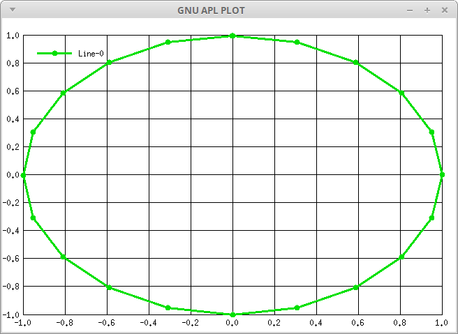
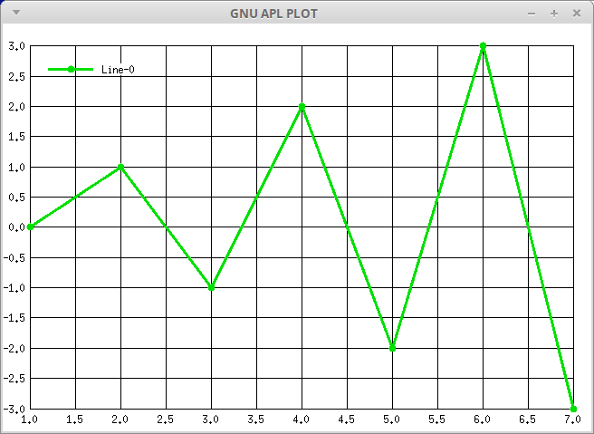

This manual briefly documents GNU APL, an interpreter for APL as described in ISO standard 13751, aka. "Programming Language APL, Extended".
This manual for GNU APL can be distributed under the terms of the GNU Free Documentation License, *Note Chapter 6::.
This manual does NOT describe APL itself; there exist a number of good books and texts about APL. We would like to refer the reader to the following:
ISO Standard for APL:
www.math.uwaterloo.ca/~ljdickey/apl-rep/docs/is13751.pdf
More pointers to APL resources on the Web:
ftp://rtfm.mit.edu/pub/usenet-by-group/comp.lang.apl/APL_language_FAQ
| • Chapter 1: | Installing and Starting GNU APL | |
| • Chapter 2: | Design Decisions | |
| • Chapter 3: | Non-standard GNU APL Features | |
| • Chapter 4: | Limitations and Missing Features | |
| • Chapter 5: | Internationalization | |
| • Chapter 6: | Libraries Contributed by GNU APL Users | |
| • Chapter 7: | Licenses for GNU APL and this Manual |
APL is built and installed like this:
For the experienced, but impatient reader: it is the usual sequence
On success, an executable file called ’apl’ will have been produced in the sub-directory ’src’.
File README contains further instructions about the installation GNU APL.
Last things first: before explaining how to start APL, it is important to remember how to stop (i.e. exit) it. Neither ^C nor ^D will stop APL - they serve other purposes. Instead, you leave APL with the command )OFF (on a separate line) like this:
)OFF
If APL is computing a function (and possibly caught in an endless loop), then you may have to press ^C (called ATTENTION in APL) in order to return to APL’s command mode and then give the )OFF command.
Having that said, APL is started like every other program - entering its name and optional command line parameters, for example:
$ apl
or:
$ apl —id 1001
GNU APL is script-able; a text file whose first line looks like this (assuming the APL interpreter binary is called ’apl’ and is located in the current directory):
#! apl
or (if the APL interpreter binary is not in the current directory but in /mypath/apl):
#! /mypath/apl
The path to the ’apl’ binary can be missing (like in the first example), relative, or absolute (second example). The exact details of how the first line of a GNU APL script shall look like varies slightly among operating systems. Please consult the info (or man) pages for ’path_resolution’ and/or ’execve’ on your operating system. After the the name of the binary, optional GNU APL command line options, usually –script, can be provided.
The text file must, of course, have execute permission, and should be ASCII or, more likely, UTF-8 encoded. The APL characters in the script shall be those defined in the Unicode character set (most of them in the U+2200 - U+23FF range).
GNU APL understands the following command line options:
perform chroot("new_root") followed by chdir("/"). This restricts the access of the the process running GNU APL to files in or below directory new_root, and it also changes the current directory (which could have resided above new_root before the chroot() was executed).
The -C option is intended to be a security feature for GNU APL interpreters that are facing a hostile environment like the public internet.
NOTES:
show ./configure options that were used to configure GNU APL, and exit.
start with ]COLOR ON [OFF].
run the APL interpreter (or APL script) in the background (i.e. as a daemon). For this to work you need to provide some input to the background process, e.g. via the -f option.
run in (old) Emacs mode.
run in (new) Emacs mode with argument arg.
read input from \fIfile\fP rather than from the keyboard. When the end of the file is reached, input is switched back to the keyboard. If you want to terminate the APL interpreter after executing the file, then use )OFF as last line in the file.
show GNU APL license (GPL) and exit.
)LOAD wsname on start-up.
execute expr first. This can be used, for example, to load some library or workspace at start-up.
print all command line options with a brief hint what they do.
use processor ID proc for this interpreter. If no ID is provided, then the first unused ID > 1000 is taken by this interpreter and the ID becomes used as long as the interpreter runs. Processor IDs are used by shared variables to identify share partners.
turn logging facility num ON (if dynamic logging is configured). The logging facility for start-up messages can be turned on even when dynamic logging is not configured.
do not echo stdin to stdout. Almost a must for scripting (unless you troubleshoot a script).
do not load a SETUP or CONTINUE workspace on start-up.
This option causes GNU APL to perform an automatic )OFF command after the last line of the last input file (as per -f option) was executed.
set the initial value of ⎕PW to COLS (min. 30, max. 10000)
do [not] start APserver (a shared variable server) on start-up. This disables communication with other workspaces or auxiliary processors through shared variables.
use profile number N in preferences files.
use processor parent ID pproc (default: no parent ID).
do not emit ESC sequences. Normally ESC sequences are emitted for colored output and during line editing. In scripts, however, ESC sequences usually not wanted and can be turned off with this option.
this option is an abbreviation for: --silent --noCIN --noCONT -f - which is a typical combination of options for APL scripts.
suppress printing of the GNU APL welcome message. Useful for scripts.
disable shared variables and native functions
display the binary directory (where, according to ./configure, the programs apl, APserver, AP100, and AP210 are supposed to be installed. Then exit.
display the directory where, according to ./configure, documentation files for GNU APL are installed. Then exit.
display the system configuration directory where, according to ./configure, the preferences file for GNU APL is installed. Then exit.
display the library directory where, according to ./configure, shared library files and the workspaces shipped with GNU APL are installed. Then exit.
display the source directory where, according to ./configure, GNU APL was compiled. Then exit. This can be used, for example, by native functions\ that are built outside the GNU APL source tree to find GNU APL header files that are needed to compile the native function.
display all the directories above. Then exit.
test mode. This option how the interpreter shall behave when running a number of testcases (as specified with the -T option)
--TM 0 (default) run all testcases and exit after the last testcase.
--TM 1 like --TM 0 if no error was detected. However, if one of the testcases has failed, then the interpreter does not exit so that the user can investigate the state of APL (SI, variable values, etc.).
--TM 2 like --TM 1, but stay in the interpreter even if all testcases have passed. This can be useful in order to quickly bring the interpreter into a specific state and continue manual troubleshooting from that state.
--TM 3 like --TM 1, but stop testcase execution after the first failed testcase (i.e. do not exit).
--TM 4 like --TM 3, but exit after the first failed testcase. The is useful for automatic regression tests, where no errors are expected.
executes test case files in random order.
Normally, when the interpreter is run with the -T option, then an existing summary.log file is overridden without notice. This option causes new test results to be appended to a possibly existing summary.log instead of overriding it.
show version information and exit.
run as user with UID 0. This option can only be used by the root user (who then wants to run as a different user).
wait milli milliseconds at start-up. Useful to give other programs that are started together with this interpreter time to initialize themselves.
end of command line options for the interpreter. GNU APL provides the system variable ⎕ARG that returns all command line options with which the GNU APL interpreter was invoked (similar to variable argv in main(int argv, char * argv[]) in C/C++). Option —- can be used to separate command line options for the APL interpreter from command line options understood by APL applications.
Thus,
(⎕ARG ⍳ ⊂'--') ↑ ⎕ARG returns the options for the APL interpreter, while
(⎕ARG ⍳ ⊂'--') ↓ ⎕ARG returns the options for the APL application.
All command line options after -- are ignored by the interpreter
(except making them available in ⎕ARG).
The default values for some of the command line options discussed in the previous section can be set in a configuration file for GNU APL. The name of the configuration file is ’preferences’ and it should live in one of the following directories:
The system configuration directory is usually /etc or /usr/local/etc and is configurable via ./configure --sysconfdir. An empty (i.e. all settings commented out) preferences file is being installed in the system configuration directory when GNU APL is installed. You can edit it or use it as a template to see which options can be controlled.
If file ’preferences’ exists in both directories, then the settings in $HOME/.gnu-apl/preferences override settings in, for example, /etc/gnu-apl.d/preferences.
Command line options in turn override settings in ’preferences’ files.
The GNU APL interpreter is a binary file named apl. It is usually installed in directory /usr/bin/ or in /usr/local/bin/. The location where apl is installed can be changed via ./configure options (see file INSTALL).
GNU APL understands 4 file types:
The following APL commands are related to file names:
)LOAD [lib] name[.xml]
)SAVE [lib] [name[.xml]]
)COPY [lib] [name[.xml]]
)PCOPY [lib] [name[.xml]]
)DROP [lib] [name[.xml]]
)IN [lib] name[.atf]
)PIN [lib] name[.atf]
)OUT [lib] name[.atf]
)DUMP [lib] [name[.apl]]
)LIB [lib]
)LIBS [new-lib-root]
)WSID [name]
The rules how file names are constructed from the argument(s) of an APL command are:
If the name starts with ’/’ then it is taken as an absolute path to the file (an absolute file name) and no further computation is done with the name.
Otherwise name is a relative path which is relative to some directory library-root and a sub-directory of library-root that is determined by the lib number. The library numbers 0-9 correspond to the following directories:
0: library-root/workspaces/
1: library-root/wslib1/
2: library-root/wslib2/
...
9: library-root/wslib9/
The command )LIBS without arguments shows the mapping between library numbers and paths. The command )LIBS with an argument sets a new lib-root.
The command )LIB [lib] shows the files in library (i.e. directory) lib.
The directory library-root is computed as follows when the interpreter starts:
If an environment variable APL_LIB_ROOT is defined, then its value is used as library-root. Otherwise the path from the current directory (".") up to the root directory ("/") is searched until a directory containing two files ’workspaces’ and ’wslib1’ is found. Normally ’workspaces’ and ’wslib1’ are directories, but for the computation of library-root files suffice.
If such a directory is found, then it is used as library-root; otherwise the current directory (i.e. ".") is used and converted to an absolute path.
For example, if library-root is "." then the command
)LOAD 2 test
will try to load the workspace file
./wslib2/test.xml
Using a library root implies that all 10 library directories are contained in the same directory. This is good enough for single-user environments but is often not adequate for multi-user environments where some directories are not writable by users and different users have different home directories.
For that reason the above library root scheme can be overridden by the GNU APL configuration files (preferences). In these files you can uncomment any of the LIBREF-0 to LIBREF-9 settings (which correspond to library numbers 0 to 9) and provide your own paths. The library numbers NOT overridden in a ’preferences’ file still follow the library root scheme.
The ISO standard leaves a few things unspecified and GNU APL may behave differently than other APL interpreters.
There are 4 APL symbols / ⌿ \ and ⍀ that can be functions or operators, depending on their context (i.e. depending on the APL tokens left of them). Neither the ISO standard nor the otherwise excellent IBM APL2 language reference manual explain the rules that decide whether, for example /, should mean ’function compress’ or ’operator reduce’. In simple cases the meaning of / is obvious: +/B means ’operator reduce’ while 1/B means ’function compress’.
The following example may explain the problem:
÷ / \ 2 ⍝ case (i) 2 (÷ /) \ 2 ⍝ case (ii) 2 ÷ (/ \) 2 ⍝ case (iii) 0.5
In (i) and (ii) / is an operator thanks to ÷ left of it while in (iii) / is a function bound to operator \.
Both (ii) and (iii) are valid interpretations of (i). The ISO standard defined the result after the decision if / should be treated as function or as operator was made but says nothing about how to decide that.
The APL2 language reference gives additional information about such aspects (binding strength between token) but the ambiguity related to / ⌿ \ and ⍀ is not resolved by these rules.
The first decision to make is at which point in time the role of / and friends shall be decided. The options are:
(a) when the statement is tokenized and parsed (call that moment ’⎕FX time’ similar to compile-time for compiler languages), or
(b) when a statement is executed (call that ’run-time’), or
(c) theoretically a combination of (a) and (b)
The advantage of (a) is less run-time overhead which is important because / is probably the most frequently used APL operator. As will be explained below there are cases where (a) fails. The advantage of (b), at first glance, seems to be that it always gives the correct result (more precisely: the expected result because ’correct’ would require a valid specification). A closer look reveals, however, that this is only true for the most simple cases but not in general.
To give you an idea where (b) becomes tricky is this (there are more of that kind):
A[FOO]/B ⍝ where FOO could define A via ⎕FX or do A←
It is still possible to resolve the last example at run time, but the parser would become far more complex to do that. The same holds for (c).
For these reasons the decision was made in favor of (a) with a syntactic tweak to handle the (single) case where (a) fails. In principle the symbol left of, for instance, / decides if / should be a function or an operators. The matter can become more complex if index brackets or parentheses are involved. The algorithm used in GNU APL for classifying / and friend is (simplified) this:
1. / ⌿ \ and ⍀ are tokenized as operators
2. Scan the tokenized statement from left to right to find / ⌿ \ or ⍀
3. If a / ⌿ \ or ⍀ is found, go backwards until a constant, or a function, or a user-defined name is found: 3a. if a constant, a function, or a user-defined name is found then →4 3b. if ) is seen then skip over it, That is, a parenthesized expression is entered. 3c. if ] is seen then skip until the corresponding [ is found, That is an index list or axis is skipped over. 3d. otherwise: SYNTAX ERROR
4. decide the role of / \ ⌿ or ⍀ based on the kind of token that was found in 3a: 4a. function: leave / as operator as initially tokenized 4b. constant: change / from operator to function (compress) 4c. see below
This works fine except in case 4c. which cannot be resolved at ⎕FX time. For this case we introduce the following convention:
A user-defined name is assumed to be a function (and hence / is an operator) unless the name (and nothing else) is enclosed in parentheses. For example:
A / B ⍝ A is function, therefore / is operator
(A) / B ⍝ A is value, therefore / is function
This rule is moderately compatible with ISO and APL2; in APL2 (A) would be redundant parentheses so in that case there would be a small incompatibility between GNU APL and IBM APL2.
| • Section 3.1: | APL Scripting | |
| • Section 3.2: | Axis argument in defined functions | |
| • Section 3.3: | Colored Output | |
| • Section 3.4: | Comparison Rules | |
| • Section 3.5: | Complex Numbers | |
| • Section 3.6: | Debug Commands | |
| • Section 3.7: | Direct Functions (Lambdas) | |
| • Section 3.8: | ]DOXY Command | |
| • Section 3.9: | )DUMP Command | |
| • Section 3.10: | History and TAB completion | |
| • Section 3.11: | Logging Facilities | |
| • Section 3.12: | Rational Numbers | |
| • Section 3.13: | Hex Numbers | |
| • Section 3.14: | User-defined Commands | |
| • Section 3.15: | Monadic ⊢ and ⊣, dyadic ⊢ with Axis | |
| • Section 3.16: | Bit-wise Logical Functions ⊤∧, ⊤∨, ⊤⍲, and ⊤⍱ | |
| • Section 3.17: | Dyadic ⎕CR | |
| • Section 3.18: | Dyadic ⎕FX (Native Functions) | |
| • Section 3.19: | ⎕ARG - Interpreter command line arguments | |
| • Section 3.20: | ⎕DLX - Knuth’s Dancing Links Algorithm | |
| • Section 3.21: | ⎕ENV - Environment Variable | |
| • Section 3.22: | ⎕FIO - File I/O Functions | |
| • Section 3.23: | ⎕FFT - Fast Fourier Transform | |
| • Section 3.24: | ⎕GTK - GTK Interface | |
| • Section 3.25: | ⎕PLOT - Plot Data | |
| • Section 3.26: | ⎕PS - Print Style | |
| • Section 3.27: | ⎕RE - Regular Expressions | |
| • Section 3.28: | ⎕SQL - SQL Database Interface | |
| • Section 3.29: | ⎕SI - State Indicator | |
| • Section 3.30: | ⎕SYL - System limits |
There are a few possibly useful features in GNU APL:
Next: Section 3.2, Up: Chapter 3 [Contents]
As already mentioned, it is possible to write APL scripts. Similar to other script languages, an APL script is a text file whose first line is a "shebang line", i.e. a line starting with #!, followed by the absolute path to the interpreter (in our case the GNU APL binary), followed by command line arguments that are passed on to the interpreter. In our case the shebang line could be, for example:
#! /usr/local/bin/apl --id 1010
There are essentially two ways to run an APL script: redirecting the script file to stdin of the interpreter or making the script executable and indicate apl as the script interpreter (followed by some command line arguments for apl).
A file, say SCRIPT.apl, can be redirected to apl by redirection of the shell:
apl < SCRIPT.apl
Alternatively, the command line option -f of apl can be used:
apl -f SCRIPT.apl
Both ways of redirecting the file are almost identical; in the first case redirection was performed by the shell running apl, while in the second case the redirecting of the file was performed by apl itself.
Alternatively the script can be made executable, mentioning apl as the interpreter for the script (see also 'man 2 execve'). For this to work, the first line of the script must have a special format
#! /usr/local/bin/apl --script
--script prevents: printing of a welcome banner, echoing of stdin to stdout, automatic loading of a )CONTINUE workspaces, and prevents starting of a thread for shared variable communication.
If the path to the interpreter is relative (which might be useful if you do not know in advance where the APL interpreter will be installed) then it must be in $PATH of the shell that runs the script.
As we have seen, GNU APL can be started directly (by entering the name of the GNU APL binary on the command line of a shell, or indirectly by entering the name of a script that provides the name of the GNU APL binary on the first line of the script. In the latter case, the shell uses function execve() to start APL, and one can provide additional arguments that are passed on to APL. We briefly discuss both cases:
0. General Remark
There is a convention in GNU APL that command line options (and possibly option arguments) that occur left of ’—-’ are options directed to (and understood by) the APL interpreter while options right of ’—-’ are passed to the APL application (and their exact format is defined by the application). The command line options that were used to start APL can be retrieved with ⎕ARG.
Example 1: APL started directly
We start APL with some command line options and display them with ⎕ARG. The command line options for the interpreter are –silent, –id, and 1010, while the options app1 and app2 are for the APL application:
$ apl --silent -l 37 -- app1 app2
⊃⎕ARG
apl
--silent
-l
37
--
app1
app2
Example 2: APL started indirectly
Starting APL indirectly means that there is a script (a text file with execute permission) that contains APL code and has a special first line as described above. There are now two sets of command line options: those passed to the script and those on the first line of the scripts. When the script is started, possibly with command line arguments, then the command line arguments entered by the user are combined with the arguments on the first line of the script in a way that is described in ’man 2 execve’.
Assume the script file SCRIPT.apl contains this (the file is shipped with GNU APL):
#! /usr/local/bin/apl --id 1010 --script
⊃⎕ARG ⍝ show command line options
)OFF ⍝ leave the interpreter
Assume further that the script is started like this:
$ ./SCRIPT.apl sarg1 sarg2
Then the following output, which shows the order of command line options as seen by ⎕ARG, is produced:
⊃⎕ARG /usr/local/bin/apl --script ./SCRIPT.apl sarg1 sarg2
This tells us that the different names are constructed by execve() in the following order:
1. Interpreter name (the first name in the script file, here: /usr/local/bin/apl)
2. Optional Interpreter arguments (here: —-script)
3. Script filename (here: ./SCRIPT.apl)
4. Script arguments (here: sarg1 sarg2)
CAUTION: as discussed in ’man 2 execve’ the interpretation of the optional interpreter arguments (2. above) is system specific and possibly not portable. For that reason the optional interpreter argument should not be missing (you can use —- to provide at least one argument) and also not more than one argument. On GNU/Linux systems the following first lines of the script are understood:
/usr/local/bin/apl /usr/local/bin/apl -- /usr/local/bin/apl -s /usr/local/bin/apl --script /usr/local/bin/apl -s -- /usr/local/bin/apl --script --
The recommended form is: /usr/local/bin/apl —-script
Note that ’—-’ and options that follow it ARE NOT shown in ⎕ARG if they are given on the first line of the script, while ’—-’ and options that follow on the script command line ARE shown. There is no point in passing application options in the script file via the command line to apl; instead you can use them directly in the script.
Using ’—-’ as last argument on the first line of the script file prevents any of the options given to the script to be interpreted as APL options; all such options are passed to the application via ⎕ARG.
In order to be really useful for scripting, three more features have been added:
* ⎕ARG: access to the command line arguments given to the interpreter * ⎕ENV: access to the environment variables of the process running the interpreter, and * ⎕INP: Here-Document-alike function for creating large text variables
The system variable ⎕ARG contains all command line arguments passed to the interpreter. In the initial example above this would be a nested 3-element vector:
/usr/local/bin/apl --id 1010
A feature particularly useful for CGI scripting (where some information is passed to the APL script via environment variables) is the monadic system function ⎕ENV B. ⎕ENV B returns all environment variables whose name starts with B. If ⍴B is 0, like:
⎕ENV ''
then all environment variables are returned. The result of ⎕ENV is a N-by-2 matrix. The first column is the name of the environment variable. The second column is the value of the variable. The number N of environment variables returned obviously depends on the number of environment variables whose name begins with the prefix given in B. B is case sensitive, but by convention the names of environment are uppercase.
If you need to create a longer text, like the body of a web page, then you would normally construct it like this:
BODY ← ⊂ 'First line' BODY ← BODY , ⊂ 'Second line' BODY ← BODY , ⊂ 'Third line' ...
That is not very handy for longer texts. Instead you can write the following in an APL script:
BODY←⎕INP 'END-OF-⎕INP' First line Second line Third line ... END-OF-⎕INP
This works like "Here documents" in bash. The right argument of ⎕INP is the end of text marker, ⎕INP also has a dyadic form where the left argument specifies an escape sequence from text to apl and back to the text, similar to PHP scripts:
’<?apl’ ’?>’ ⎕INP ’END-OF-⎕INP’ First line Time is now: <?apl ⍕⎕TS ?> Third line ... END-OF-⎕INP
Another feature of GNU APL to simplify the creation of values that contain longer texts are strings that span several lines. One consequence of how ⎕INP works is that the strings read by ⎕INP always originate in stdin of the interpreter. In immediate execution mode (and therefore also in APL scripts) stdin is the next lines entered by the user (interactive APL sessions) or the next lines in the script file (in APL scripts). Often, however, a programmer wants to specify long strings inside a defined function and not on the top-level of an APL script. That renders ⎕SI almost useless for defined functions.
In order to provide a way for defining long strings inside defined functions, multi-line strings were introduced. They come in two flavors: old-style and new-style.
Old-style multi-line strings were the first attempt to provide long strings for defined functions. These strings are not allowed in immediate execution mode because could easily be entered by mistake (by simply forgetting the terminating " or ’ of a string) and that would have obscured the traditional behavior of immediate execution mode.
An old-style multi-line string starts at the last " in a line of a defined function that has line with an odd number of " characters. It continues over the subsequent function lines until the next ". The result is a nested APL value containing one nested string per line involved.
For example:
∇Z←FOO Z←"ABC DEF GHIJK" ∇ 4 ⎕CR FOO ┏→━━━━━━━━━━━━━━━━━━━━┓ ┃┏→━━┓ ┏→━━━┓ ┏→━━━━━┓┃ ┃┃ABC┃ ┃ DEF┃ ┃ GHIJK┃┃ ┃┗━━━┛ ┗━━━━┛ ┗━━━━━━┛┃ ┗∊━━━━━━━━━━━━━━━━━━━━┛
If the first string is empty then the nested value starts with an empty string, but completely empty lines in the defined function are being ignored:
∇Z←FOO Z←" ABC DEF GHIJK" ∇ 4 ⎕CR FOO ┏→━━━━━━━━━━━━━━━━━━━━━━━━━┓ ┃┏⊖┓ ┏→━━┓ ┏→━━━┓ ┏→━━━━━━┓┃ ┃┃ ┃ ┃ABC┃ ┃ DEF┃ ┃ GHIJK┃┃ ┃┗━┛ ┗━━━┛ ┗━━━━┛ ┗━━━━━━━┛┃ ┗∊━━━━━━━━━━━━━━━━━━━━━━━━━┛
Even though the combination of ⎕INP for immediate execution and multi-line strings for defined functions achieved the goal of specifying large amounts of text in a simple manner, its was certainly not very intuitive or elegant to have different approaches for different APL modes.
This was leading to the new-style multi-line strings. They adopted the triple quote (""") syntax know from e.g. the Python language. The syntax of new-style multi-line strings cleaner: empty lines are handled more consistently and the string lines are completely separated from the APL code lines. More importantly, new-style multi-line strings work alike in immediate execution mode, in scripts, and in defined functions. New-style strings are a little different and more restrictive than their old-style companions:
* the starting """ must be placed at the end of an APL code line, i.e. no mixing of APL code and string content on the same line. In old-style strings the APL line on which the string started became part of the string while in new-style strings the strings begins at the following line.
* the ending """ must be placed at the end of a separate lines with only spaces allowed before the """ (to vertically align it with the leading """ if so desired). In old-style strings the text up to the termination " is part of the string while in new-style strings it is not.
* Neither the starting nor the ending line become nested strings of the result, and every line can be clearly identified as being either APL code or else string text.
Example:
4 ⎕CR """
ABC
DEF
GHIJK
"""
┏→━━━━━━━━━━━━━━━━━━━━━━━━━┓
┃┏→━━┓ ┏→━━━┓ ┏⊖┓ ┏→━━━━━━┓┃
┃┃ABC┃ ┃ DEF┃ ┃ ┃ ┃ GHIJK┃┃
┃┗━━━┛ ┗━━━━┛ ┗━┛ ┗━━━━━━━┛┃
┗∊━━━━━━━━━━━━━━━━━━━━━━━━━┛
When entering a new-style multi-line strings then the prompt is prepended by → to indicate that a Multi-Line String is being entered.
⎕INP and old-style strings will coexist for s while, but may disappear at some point in time.
Note that the two different ways of running an APL script have an impact on how ⎕ARG looks like. If stdin is redirected then there is only one (possibly empty) set of command line options. Otherwise there are two set of command line options: command line options for the apl interpreter and command line options for the script.
Consider the following simple script called SCRIPT.apl in directory workspaces:
#! /usr/local/bin/apl --script ⊃⎕ARG ⍝ show command line options )OFF ⍝ leave the interpreter
If SCRIPT.apl is redirected to stdin of the APL interpreter:
/usr/local/bin/apl --silent < ../workspaces/SCRIPT.apl or /usr/local/bin/apl --silent -f ../workspaces/SCRIPT.apl
then the first line #! /usr/local/bin/apl --script of file SCRIPT.apl is merely a comment (GNU APL accepts both the traditional APL character ⍝ and the character # as start of a comment). The --script option is therefore ignored and the following mix of input and output is shown on the screen. The input from the script is indented by the usual APL prompt of 6 blanks, while the output of the APL interpreter is not indented.
#! /usr/local/bin/apl --script
⎕ARG ⍝ show command line options
)OFF ⍝ leave the interpreter
If we run the same script directly:
../workspaces/SCRIPT.apl
Then we get:
/usr/local/bin/apl --script ../workspaces/SCRIPT.apl
The --script implies --noCIN so that the
input lines for the interpreter are no longer echoed to the output. That is most likely what you want when writing a script.
Also, the first line of the script is no longer ignored as a comment, but controls the command line argument (and thus ⎕ARG) of the interpreter. The additional command line argument ../workspaces/SCRIPT.apl comes from function execve (see ’man 2 execve’).
If we provide an argument, say SCRIPTARG, to SCRIPT.apl:
../workspaces/SCRIPT.apl SCRIPTARG
then it shows up at the end of ⎕ARG:
/usr/local/bin/apl --script ../workspaces/SCRIPT.apl SCRIPTARG
A final note on scripting in GNU APL is that the ∇-editor works slightly differently when it is used in a script. If a user edits an APL function interactively then an attempt to open an existing function with a full header gives a DEFN ERROR:
∇Z←FOO B
[1] ∇
∇Z←FOO B
DEFN ERROR+
∇Z←FOO B
^
)MORE
attempt to ∇-open existing function with new function header
In contrast to a user who can react to the DEFN ERROR, a script cannot detect this situation and would continue to push lines (which were intended to be the body of the defined function) into the APL interpreter. That would most likely cause a fairly undesirable behavior. For example, if the lines of defined function start with line numbers (like [1], [2], ...) then every such line would give a SYNTAX ERROR, and other errors can be expected as well.
For that reason, if the ∇-editor is used in a script and attempts to redefine an existing defined function then the existing function is simply overridden with the new one and no DEFN ERROR is raised.
Next: Section 3.3, Previous: Section 3.1, Up: Chapter 3 [Contents]
Defined functions and operators (including lambdas) accept an axis argument. For example:
∇Z←Average[X] B
Z←(+/[X]B) ÷ (⍴B)[X]
∇
Average[1] 5 5⍴⍳25
11 12 13 14 15
Average[2] 5 5⍴⍳25
3 8 13 18 23
Syntactically, the axis is used in the same way as for primitive functions and operators.
There are no constraints on the axis such as being integers. Therefore you can use an axis as a third function argument. Keep in mind, however, that doing so will make your APL code incompatible with other APL interpreters. Use this feature carefully!
Next: Section 3.4, Previous: Section 3.2, Up: Chapter 3 [Contents]
The APL interpreter gets its input from the standard input (stdin), which is normally connected to the user’s keyboard, but can also be a file if APL scripting, the -f option, or the -T option is used.
The APL interpreter prints its results on either the standard output (stdout) for normal APL output, or to the error output (stderr) for additional trouble-shooting information.
You can print the 3 channels stdin, stdout, and stderr in different colors by means of the debug command ]XTERM. Command ]XTERM ON enables colored output while ]XTERM OFF disables it (for example to avoid annoying ANSI Escape sequences when forwarding stdout or stderr to a file).
By default colored output assumes a terminal (-emulation) that understands ANSI (or VT100) Escape sequences. The xterm that comes with most recent GNU/Linux distributions is a perfect choice supporting both colors and UTF-8 (Unicode) encoded character I/O.
Non-ANSI terminals, as well as other colors than the default ones, can be configured in the ’preferences’ file. The ’preferences’ file also contains a description of all possible color settings.
Next: Section 3.5, Previous: Section 3.3, Up: Chapter 3 [Contents]
Both IBM APL2 and the ISO standard require that the arguments of <, ≤, ≥, and > (but not = or ≠) are integer or real numbers, and that the argument of monadic ⍋ or ⍒ is a vector of integer or real numbers. In contrast GNU APL also allows the comparison of characters and numbers or the comparison of complex numbers according to the following, more general, rules.
Let A and B two APL values to be compared. The first comparison below that succeeds (i.e. returns a result) is then the result of comparing A and B.
1. If (⍴⍴A) < (⍴⍴B) then A < B. And vice versa.
2. If (⍴A) < (⍴B) then A < B. And vice versa.
3. Otherwise ⍴A and ⍴B are equal. If all corresponding ravel elements of A and B are equal (i.e. tolerantly equal within ⎕CT as defined in the ISO standard) then A = B. Otherwise let A1 and B1 the first corresponding ravel elements of A and B with A1≠B1.
4. If A1 and B1 are both character values and (⎕UCS A1) < (⎕UCS B1) then A < B. And vice versa.
5. If A1 is a character and B1 is numeric, then A < B. And vice versa.
6. If A1 and B1 are both numeric values then:
6a. If (9○A1) < (9○B1) then A < B. And vice versa.
6a. Otherwise if (11○A1) < (11○B1) then A < B. And vice versa.
Another way of describing the rules above is that the comparison of two values is comprised of sub-comparisons of certain properties of the values in the following order:
Note: Rules 1. and 2. above are only relevant for comparisons made in the context of sorting (i.e. for ⍋ or ⍒). This is because for =, ≠, <, ≤, ≥, or > either a RANK ERROR or a LENGTH ERROR is raised if the ranks or shapes of A and B do not match:
(9 8) < (1 2 3)
LENGTH ERROR
9 8<1 2 3
^ ^
⍋(9 8) (1 2 3)
1 2
The reason for comparing complex numbers first by their real parts and then by their imaginary part and not, for example, first by their magnitude and then by their angle is that the chosen order gives more consistent results when comparing near-complex numbers or their true real companions. For example, a magnitude first comparison of complex numbers would make ¯1 < ¯2J∈ for a near-complex ¯2J∈ but ¯1 > ¯2 for a true real ¯2.
Next: Section 3.6, Previous: Section 3.4, Up: Chapter 3 [Contents]
Complex numbers are fully supported.
Next: Section 3.7, Previous: Section 3.5, Up: Chapter 3 [Contents]
Besides the classical commands like )LOAD or )SAVE there are a number of debug commands that start with ] rather than ). Regular commands start with ) and print their output on stdout. Debug commands start with ] and print their output on stderr. Normally you cannot easily distinguish between stdout and stderr, but another feature, colored output, uses different colors for stdout and stderr.
Type )HELP or ]HELP in the interpreter for a list of all commands available.
Next: Section 3.8, Previous: Section 3.6, Up: Chapter 3 [Contents]
GNU APL supports direct functions (aka. lambdas), but only in a rather limited form.
A statement of the form
FUN ← { body_statement }
creates a named lambda. body_statement can contain variable names ⍺ and ⍵ as well as function names ⍶ and ⍹ which are replaced by the actual arguments of the lambda. If both ⍺ and ⍵ are present in body_statement then the lambda is dyadic. If only ⍵ is present then it is monadic, and if neither ⍺ nor ⍵ is present then the lambda is niladic.
Likewise, if ⍶ and ⍹ are present then the lambda is a dyadic operator. If only ⍶ is present then it is a monadic operator, and if neither ⍶ nor ⍹ is present then the lambda is a normal function.
GNU APL supports an axis argument in normal user defined functions and operators. In lambda expressions the Greek letter χ (Chi) is the variable name for an axis argument.
The way a named lambda is implemented in GNU APL is that the expression
FUN ← { body_expression }
is translated to a two-line function ⎕FX ’lambda_header’ ’body_expression’.
For example:
)FNS
SUM ← { ⍺ + ⍵ }
)FNS
SUM
∇SUM[⎕]∇
[0] λ←⍺ SUM ⍵
[1] λ← ⍺ + ⍵
The lambda_header is automatically deduced from the presence or absence of the variable names (⍺, ⍵, and χ) and function names (⍶ and ⍹) in the body_expression and from whether the body_expression is empty (no λ←) or not (with λ←).
It is possible to specify local variables that work exactly like their companions in normal defined functions. Please note that this is different from some other APL interpreters which treat all variables in lambda bodies as local variables. The syntax for specifying local variables is the same as for the header in normal defined functions: they are added at the end with semicolons as separators. In the above example one could add local variables C and D like this:
SUM ← { ⍺ + ⍵ ;C;D }
⎕CR 'SUM'
λ←⍺ λ1 ⍵;C;D
λ← ⍺ + ⍵
If a named lambda is created inside a function, then the name of the lambda (i.e. the name left of ← { ... }) can be made a local variable of the function in which the named lambda is created. This creates a lambda with local scope.
Please note that the above only describes the current implementation of named lambda in GNU APL. A consequence of that implementation is that the symbols ⍺, ⍵, ⍶, ⍹, and λ are pretty much behaving like user defined variables. In particular, they can be used outside named or unnamed lambdas. However, that may change in the future and therefore such use of ⍺, ⍵, ⍶, ⍹, and λ outside is certainly a bad idea.
An unnamed lambda is an expression inside { } but without assigning it to a name. This is often used together with the EACH operator. For example:
{ ⍴ , ⍵ } ¨ 'a' 'ab' 'abc'
1 2 3
Unnamed lambdas are automatically local in scope (similar to labels). They can be passed as function arguments to operators. However, unnamed lambdas are NOT inserted into the symbol table of the interpreter. They are therefore not visible to functions like ⎕CR or by the ∇-editor. Occasionally the names λ1, λ2, ... may show up in commands like )SIS. These names are automatically generated for unnamed lambdas in order to provide a name in places where a function name is needed.
There are a number of features related to lambdas that are present in other APL interpreters but that are NOT implemented in GNU APL. This includes multiple statements, guards, lexical scoping, and probably more.
Next: Section 3.9, Previous: Section 3.7, Up: Chapter 3 [Contents]
A particularly useful debug command is ]Doxy. It dumps the current workspace in brows-able HTML format with listings of defined functions and hyperlinks between them.
]DOXY ⍝ write documentation to /tmp/WS-NAME/* ]DOXY dest ⍝ write documentation to dest/WS-NAME/*
The starting point for browsing the documentation are the files:
/tmp/WS-NAME/index.html ⍝ for ]DOXY without arguments, resp. dest/WS-NAME/index.html ⍝ for e.g. ]DOXY dest
The index.html files above usually corresponds to the following URIs in your browser:
file:///tmp/WS-NAME resp. file:///absolute-path-to-dest/WS-NAME
In the above examples is WS-NAME the )WSID of the workspace in which the ]DOXY command was executed.
One can (and should make it a habit to) insert special comments into defined function which are copied into proper places inside the documentation that is generated by the ]DOXY command. These "Doxy" comments begin with ⍝⍝ (as opposed to "normal" APL comments that start with a single ⍝. Doxy comments are typically one-liners that briefly explain what a function is supposed to do.
For example:
∇Z←A SUM B ⍝⍝ Return the sum of A and B ← ]DOXY comment: (double ⍝) ⍝ A: numeric ← "normal" APL comments (single ⍝) ... ⍝ B: numeric Z←A + B ∇
Next: Section 3.10, Previous: Section 3.8, Up: Chapter 3 [Contents]
GNU APL has a command )DUMP that saves a workspace to disk, similar to command )OUT. The difference to command )OUT is the file format being produced. While )OUT produces a file in IBM’s workspace interchange format (aka. an .atf file), )DUMP produces a file in GNU APL’s script format (i.e. readable APL statements). Files written with )DUMP can be edited with normal text editors (vi, Emacs), read back with "apl -f", or made executable (see scripting).
Next: Section 3.11, Previous: Section 3.9, Up: Chapter 3 [Contents]
Until GNU APL 1.4 / SVN 465, GNU APL used libreadline for interactive user input. libreadline did provide two useful features: tab expansion (the tab key would expand file names) and history (the cursor up/down keys would recall previously entered lines).
Since SVN 465 libreadline was removed and the standard TAB expansion and history of libreadline were replaced by more context sensitive (i.e. APL aware) implementations:
1. Instead of simply recalling the last line entered by the user, there are now different histories for different input contexts:
1a. The input history in immediate execution recalls the last line entered in immediate execution (and not, for example, lines entered in function editing mode or ⍞ input.
1b. Likewise, ⍞ recalls the last line entered for ⍞-input
1c. ⎕ recalls the last line entered for ⎕-input
1d. In the ∇-editor, the other function lines of the function being edited can be recalled. This is far more handy than the ∇-editor commands for recalling function lines (and which are not fully supported in GNU APL).
2. Instead of always TAB-completing file names, the tab character now understands different TAB-completion contexts:
2a. Input starting with . or / is completed as a filename like readline did.
2b. Input starting with ) or ] is completed as command name name or, to some extent, as command arguments.
2c. Input starting with ⎕ is completed as a system function name or a system variable name.
2d. Input starting with letters, ∆, or ⍙ is completed as a user defined function or variable name.
Next: Section 3.12, Previous: Section 3.10, Up: Chapter 3 [Contents]
The APL interpreter has over 30 logging facilities. Each logging facility can be ON (and then produces some logging output on stderr) or OFF. The decision which logging facility shall be ON and which shall be OFF can be made at compile time (of the APL interpreter) or at run-time.
If the decision is made at compile time - we call that static logging - then it cannot be changed later on. Otherwise - we call that dynamic logging - there is a debug command ]LOG that allows to turn logging facilities to be turned ON or OFF.
By default the logging facilities that shall be turned ON are defined statically. To change the logging facilities that shall be turned ON, you can edit the file src/Logging.def which defines the different logging facilities. The first argument of macro log_def() tells if the logging facility shall be ON (1) or OFF (0).
Static logging results in a faster interpreter than dynamic logging because the decision if something shall be logged or not is made at compile time and not at run-time.
If you benchmark the APL interpreter, then ./configure Static Logging by NOT setting DYNAMIC_LOG_WANTED=yes.
Dynamic Logging is intended for trouble-shooters of GNU APL, but also for those who are interested in the internals of GNU APL. Dynamic Logging is enabled by setting DYNAMIC_LOG_WANTED=yes when running ./configure.
If Dynamic Logging is enabled, then the already mentioned file src/Logging.def determines the initial setting of each logging facility.
The command
]LOG
(without arguments) then shows all logging facilities and their current state. The command
]LOG N
toggles the state of logging facility N from OFF to ON and back.
Next: Section 3.13, Previous: Section 3.11, Up: Chapter 3 [Contents]
GNU APL has limited support for rational numbers. Instead of dividing integers (and possibly causing rounding errors), integer quotients are kept undivided internally until some function requires a conversion to a floating point (double) value.
Currently only +, -, ×, and ÷ preserve rational numbers where possible, but this list may grow in the future. Monadic + (a no-op for non-complex numbers) explicitly converts rational numbers to floating point numbers.
A quotient is internally stored as a 64-bit numerator and a 64-bit denominator. In some cases arithmetic with rational numbers is faster than with doubles, but in most cases it is slower.
For that reason support for rational numbers is disabled by default and must be enabled via ./configure (see README-2-configure).
Next: Section 3.14, Previous: Section 3.12, Up: Chapter 3 [Contents]
GNU APL supports sedecimal numbers. They start with $ and can be uppercase or lowercase:
$2a
42
$2A
42
Next: Section 3.15, Previous: Section 3.13, Up: Chapter 3 [Contents]
There is a simple mechanism to define additional APL commands. This mechanism is intended to introduce new commands by APL libraries. Like system commands, user-define commands can only be executed in immediate execution mode and not from user-defined functions or from ⍎. It is not intended to extend the functionality of user-defined commands beyond what is being described in the following.
A user-defined command ]NEW_COMMAND is created with the debug command ]USERCMD like this:
]USERCMD ]NEW_COMMAND APL_FUNCTION [mode]
APL_FUNCTION is an APL function that will be called when the command is entered in immediate execution mode. The entire line entered by the user, starting at ]NEW_COMMAND, is the right argument of APL_FUNCTION. If mode is missing (or 0) then APL_FUNCTION is called monadically. If mode is 1 then APL_FUNCTION is called dyadically; the left argument is a vector of strings that is the left argument broken down into individual argument strings.
The function APL_FUNCTION that implements a command need not exist when the command is created.
A single user-defined command ]UCMD, or all user-defined commands can be deleted like this:
]USERCMD REMOVE ]UCMD
]USERCMD REMOVE-ALL
Next: Section 3.16, Previous: Section 3.14, Up: Chapter 3 [Contents]
Monadic ⊢ is the identity function. It returns its (committed or non-committed) right argument as a non-committed value.
Conversely, monadic ⊣ (called Hide in GNU APL) discards its (committed or non-committed) right argument and returns a committed integer scalar 0.
For the most part there is no difference between a committed value (= a value that was assigned to a variable, including ⎕ and ⍞) and a non-committed value. The point where it does make a difference is when the value the final result of a statement (as opposed to an intermediate result inside a statement). In that situation (and only there) a non-committed value is being printed while a committed value is not.
You can use ⊢ is a similar fashion as ⎕← at the left end of a statement, in order to print a value even though it was previously assigned to a variable.
The main motivation for ⊣ is that, at least in GNU APL, lambdas always return a value. However, if a lambda is used only for the sake of its side effects, say to print something, then the value returned by the lambda is often of no interest and only messes up the APL output. In that situation ⊣ can be used to suppress the printing of undesired return values from lambdas.
In earlier GNU APL versions, ⊣B and ⊢B would both return B; with ⊣ as committed value and with ⊢ as non-committed value. But since the only real-life purpose of ⊣ is to suppress the printing of B, the implementation of ⊣ was changed to returning an committed integer scalar 0 instead of committed B. That reduced the run-time of ⊣B from O(,B) to O(1). Also, ⊢B is marginally faster than ⎕←B.
Dyadic ⊢ with axis is a selection function that generalizes ⊣ and ⊢.
Let Z←A[X] B. Then:
Example:
A←2 3⍴'abcdef'
B←2 3⍴⍳6
X←2 3⍴0 1 0 1 0
A ⊢[X] B
a 2 c
4 e 6
A ⊢[X] '*'
a*c
'*' ⊢[X] B
* 2 *
4 * 6
Next: Section 3.17, Previous: Section 3.15, Up: Chapter 3 [Contents]
The APL functions And (∧), Or (∨), Nand (⍲), and Nor (⍱) operate primarily on Boolean integers. Primarily means that the the LCM variant for ∧ and the GCD variant for ∨ are not considered in this context. (The LCM and GCD variants are defined in the ISO standard and supported in GNU APL but not in IBM APL2).
However, probably more often than not one needs to compute Boolean functions between the bits of arbitrary (non-Boolean) integers and not between entire Boolean integers 0 or 1. Although that is possible to do in standard APL, the procedure is fairly awkward and, more importantly, inefficient:
Note: for Boolean arguments the APL functions ≠ resp. = can be used to compute the more customary Boolean functions XOR and XNOR. In this context = and ≠ are treated as Boolean functions even though they accept non-Boolean arguments,
For example (using 5 ⎕CR (4⍴256)⊤X to display X in hex):
5 ⎕CR (4⍴256)⊤ A←$ABBADEAD
ABBADEAD
5 ⎕CR (4⍴256)⊤ B←$00FF00FF
00FF00FF
5 ⎕CR (4⍴256)⊤ 2⊥ ((64⍴2)⊤A) ∧ (64⍴2)⊤B
00BA00AD
With the bit-wise And (∣∧) the same can be achieved in a simpler fashion and far more efficiently:
⍝ Traditional AND
5 ⎕CR (4⍴256)⊤ A←$ABBADEAD
ABBADEAD
5 ⎕CR (4⍴256)⊤ B←$00FF00FF
00FF00FF
⍝ bit-wise AND
5 ⎕CR (4⍴256)⊤ A ⊤∧ B
00BA00AD
The dyadic forms of ⊤∧, ⊤∨, ⊤⍲, and ⊤⍱ are simply the bit-wise variants of their Boolean companions:
A ⊤∧ B ←→ 2⊥ ((64⍴2)⊤A) ∧ (64⍴2)⊤B ⍝ aka. AND
A ⊤∨ B ←→ 2⊥ ((64⍴2)⊤A) ∨ (64⍴2)⊤B ⍝ aka. OR
A ⊤⍲ B ←→ 2⊥ ((64⍴2)⊤A) ⍲ (64⍴2)⊤B ⍝ aka. NAND
A ⊤⍱ B ←→ 2⊥ ((64⍴2)⊤A) ⍱ (64⍴2)⊤B ⍝ aka. NOR
A ⊤≠ B ←→ 2⊥ ((64⍴2)⊤A) ≠ (64⍴2)⊤B ⍝ aka. XOR
A ⊤= B ←→ 2⊥ ((64⍴2)⊤A) = (64⍴2)⊤B ⍝ aka. NXOR or XNOR
⊤∧ and ⊤⍲ have no monadic form, but ⊤∧, ⊤∨, and ⊤⍱ do. Formally monadic ⊤∨ resp, ⊤⍱ are dyadic ⊤∨ resp, ⊤⍱ with a left argument of 0:
⊤∨ B ←→ 0 ⊤∨ B ⍝ real B to nearby integer
⊤⍱ B ←→ 0 ⊤⍱ B ⍝ bit-wise Not
Even though Or-ing a Boolean vector with 0 itself has no effect, the monadic ⊤∨ and ⊤⍱ are still useful due to their side effects: conversion from near-integer float values to integers (monadic ⊤∨ and inversion of the bits (monadic ⊤⍱, The latter is needed since ∼ has a monadic form and as a consequence ⊤∼ was not an option for a bit-wise Not function.
Monadic ⊤⍱ B is the bit-wise Not function of its argument:
⊤⍱ B ←→ 2⊥ ~(64⍴2)⊤B
Monadic ⊤∨ B converts near-integer values B into true integers:
26 ⎕CR 1 ⍝ integer
16
26 ⎕CR 1.1 ⍝ real
32
26 ⎕CR 1÷1 ⍝ integer
16
26 ⎕CR 1.1÷1.1 ⍝ real
32
26 ⎕CR ⊤∨ 1.1÷1.1 ⍝ integer
16
That also works for complex numbers with a near-zero imaginary part:
26 ⎕CR 1.1J0÷1.1 ⍝ real
32
26 ⎕CR ⊤∨ 1.1J0÷1.1 ⍝ integer
16
As a matter of fact, ⊤∨ works for all near-Gaussian complex numbers, but the effect is not visible with 26 ⎕CR since Gaussian and non-Gaussian complex numbers have the same cell type in GNU APL.
The ISO standard defines two different concepts to decide if a real number R is close to an integer I,
The first concept is an absolute distance from a real R to a nearby integer I while the second concept is a relative distance (larger numbers are allowed to be farther away from a nearby integer than smaller numbers). The two concepts differ in the same way that absolute and relative errors do.
Now, all bit-wise functions described so far use the first concept, i,e, if their their arguments are real or complex, then the smallest distance to a (nearby) integer must not exceed the integer tolerance. In some contexts that could be difficult to achieve and for that reason GNU APL provides monadic ⊤∧ which works like ⊤∨ except that the permitted distance from a nearby integer is now controlled by ⎕CT rather than by the integer tolerance.
All bit-wise logical functions throw a DOMAIN ERROR if an argument is not close enough to an integer. integer tolerance is typically smaller than ⎕CT and in that case is ⊤∧ little more tolerant than ⊤∨ regarding the distance to nearby integers. In addition ⊤∧ gives the user (via ⎕CT) more control over the permitted tolerance for real numbers in the neighborhood of integers.
Some of the bit-wise operations are allowed to have characters as their right argument. If the right argument is a character then the result is a character as well. This can be useful for masking purposes such as extracting the lower 7 bits of 8-bit bytes containing ASCII characters.
The characters involved are treated as 32 bit quantities:
5 ⎕CR 'A'
41
5 ⎕CR ⊤⍱'A' ⍝ Note that 5 ⎕CR ANDs with $FF
BE
256 256 256 256⊤ ⎕UCS ⊤⍱ 'A' ⍝ ⊤⍱ 'A' is FFFFFFBE
255 255 255 190
256 256 256 256⊤$FFFFFFBE
255 255 255 190
Next: Section 3.18, Previous: Section 3.16, Up: Chapter 3 [Contents]
The ⎕CR function has an optional left argument that selects one of several formatting styles and conversion functions in addition to the well-known monadic form.
Calling ⎕CR monadically without an axis and with an empty right argument shows a list of all functions provided by ⎕CR:
⎕CR ''
Say a byte vector is an integer vector with numbers having a (signed or unsigned) 8-bit value (i.e. a value from -128 to 255 inclusive). Such byte vectors are frequenctly used arguments and results of ⎕FIO functions.
Let Z←A ⎕CR B.
Then the left argument A of ⎕CR selects one of several sub-functions of ⎕CR:
A=0-4 or 7-9, or 29: various formatting styles (boxed, APL input/output, etc.). Just try them out.
A=5 resp. A=6: convert byte vector B to a string of uppercase resp. lowercase hex digits. Every byte in B becomes 2 characters in Z.
A=10: convert variable named in B to an APL expression producing it.
A=11: convert value B to byte vector Z in CDR ("Common Data Representation", an IBM standard) format (similar to 3 ⎕TF).
A=12: convert byte vector Z in CDR format to value Z.
A=13: convert hex string B to byte vector Z.
If a conversion has an inverse conversion (like 12 being the inverse of 11) then the inverse conversion can be expressed as the negative of the conversion number. For example, 12 ⎕CR B is the same as ¯11 ⎕CR B.
A=14: conversion 11 followed by conversion 13 (Value to hex string in CDR format)
A=15: conversion 13 followed by conversion 12 (hex string in CDR format to Value)
A=16: encode byte vector B into Z (base64 encoding, RFC 4648)
A=17: decode base64 vector B into byte vector Z (base64 encoding, RFC 4648)
A=18: convert text vector B into byte vector Z (UTF8 encoding, RFC 3629)
A=19: convert byte vector B into text vector Z (UTF8 encoding, RFC 3629)
A=20-25: like 3,4,7-9 but using a formatting similar to NARS APL ⎕FMT (showing the axis lengths as numbers instead of → and ↓)
A=26: Z is the cell types of the ravel elements of B (2: character, 16: integer, 32: real number, 64: complex number.
A=27: Z[I] is the primary data representation (for example the real part of a complex number, or the numerator of a rational number) of B[I].
A=28: Z[I] is the additional data representation (for example the imaginary part of a complex number, or the denominator of a rational number) of B[I].
A=30: Z is B with all top-level elements conformed to a common rank and shape (as required by the ⍤ operator). This conversion is primarily used internally bu the GNU APL interpreter.
A=31 or A=32: These conversions are used internally by ⎕INP.
A=33: convert tagged byte vector to a TLV (Tag/Length/Value) buffer. The TLV buffer can be sent over a byte stream (socket) and easily decoded at the other end. Say B = B[1], B[2], ..., B[n] such that B1 is an Integer (the tag) and B[j] is a character in the range 0.255 for j > 1. Let Z←33 ⎕CR B with Z = Z[1], Z[2], ... Z[m]. Then Z[1 2 3 4] is the 4 byte tag, Z[5 6 7 8] is the 4 byte data length (n-1) == (m - 8) and 1↓B == 8 ↓ Z. In other words, the first 4 bytes of Z are the tag in big endian byte order, the next 4 bytes are the length of B except the tag, and the rest of Z is B except the tag.
Example:
Tag←55 ⍝ hex 37
5 ⎕CR 33 ⎕CR Tag,'Value'
000000370000000556616C7565
A=34: this is the inverse of 33 ⎕CR. The intended use for 33 ⎕CR and 34 ⎕CR is the transmission of a tagged byte vector over e.g a TCP socket:
Sender Receiver —— ——– T,Data →→→ 33 ⎕CR T,Data →→→TCP connection→→→ 34 ⎕CR T,Data →→→ T,Data
Example:
34 ⎕CR ¯5 ⎕CR '000000370000000556616C7565' 55 Value
The TLVs constructed by 33 ⎕CR can be sent back-to-back over a TCP connection or similar in such a way that the receiver knows exactly after which byte a TLV ends, which is perfect for connections over which data is sent sporadically. 33 ⎕CR and 34 ⎕CR are particularly useful for encoding and decoding TLV byte buffers exchanged between GNU APL and processes that were forked by GNU APL with ⎕FIO[57] (aka. fork() and execve()).
Most dyadic ⎕CR variants whose argument B is expected to be a byte vector throw:
A proper byte value is either an integer in the range -128...255 including, or a (Unicode) character with a code point between U+FF80 and U+FFFF (including, corresponding to a negative signed char in C/C++) or between U+0000...U+00FF (including, corresponding to an unsigned char or to a signed positive char in C/C++). Real, Complex, or rational numbers are never proper byte values even if their value is close to an integer. Nor are nested APL values or values being assigned.
Next: Section 3.19, Previous: Section 3.17, Up: Chapter 3 [Contents]
A Native Function is a function that can be called in APL like a normal user defined APL function, but is implemented in C++.
A native function is created with A ⎕FX B. A is a string that is the path of a shared library and B is the name of the function in APL.
The GNU APL package contains a shared library file_io.so that contains the implementation of a native function for reading and writing files (fopen(), fclose(), ...), For example:
⍝ fix native function in lib_file_io.so as FILE_IO
⍝
'lib_file_io.so' ⎕FX 'FILE_IO'
FILE_IO
⍝ show overview of sub-functions in FILE_IO
⍝
FILE_IO ''
Functions provided by this library.
Assumes 'lib_file_io.so' ⎕FX 'FUN'
Legend: e - error code
i - integer
h - file handle (integer)
s - string
A1, A2, ... nested vector with elements A1, A2, ...
FUN '' print this text on stderr
'' FUN '' print this text on stdout
FUN[ 0] '' print this text on stderr
'' FUN[ 0] '' print this text on stdout
Zi ← FUN[ 1] '' errno (of last call)
Zs ← FUN[ 2] Be strerror(Be)
Zh ← As FUN[ 3] Bs fopen(Bs, As) filename Bs mode As
Zh ← FUN[ 3] Bs fopen(Bs, "r") filename Bs
...
Recent versions of GNU APL have replaced the native FILE_IO function above by the system function ⎕FIO. ⎕FIO need not be ⎕FX’ed and is otherwise backward compatible to the native function. New function numbers are, however, only added to ⎕FIO and not to the old native function FILE_IO. The parameters of the functions are described in the man pages for, e.g. strerror, fopen, ... and are fairly obvious.
Many functions in FILE_IO have byte vectors as arguments or return byte vectors. A byte vector is an integer vector whose numbers fit into a byte (so they are integers between -128 and 255). Often ⎕UCS and the functions in dyadic ⎕CR are used to convert such byte vectors to/from, for example, Unicode strings.
The GNU APL package also contains other shared libraries as templates for your own native functions. Copy one of the files src/native/template_F0.cc (for niladic native functions), src/native/template_F12.cc (for nomadic native functions), src/native/template_OP1.cc (for monadic native operators), or src/native/template_OP2/cc (for dyadic native operators) to your own .cc file and adjust src/native/Makefile.am accordingly.
Note: The )IN and )OUT commands of GNU APL support native functions, but in order to do so they have to use dyadic ⎕FX. This renders the workspace interchange file (.atf files) written by )OUT incompatible with all other APL interpreters if the workspace contains native functions. The )OUT command prints a warning when the )OUT command is used with a workspace that contains native functions.
Note: As of GNU APL 1.6, the native function FILE_IO has been turned into the system function ⎕FIO. The syntax of ⎕FIO is the same as for FILE_IO. The )CLEAR workspace command will close all open files.
Next: Section 3.20, Previous: Section 3.18, Up: Chapter 3 [Contents]
⎕ARG contains the command line arguments with which GNU APL was invoked. See Section 3.1.
Next: Section 3.21, Previous: Section 3.19, Up: Chapter 3 [Contents]
⎕DLX is an implementation of Donald Knuth’s Dancing Links Algorithm (called DLX by Knuth himself, but is sometimes also referred to as Knuth’s Algorithm X) ⎕DLX is a generic backtracking machinery that can be used to dramatically simplify problems like the 8 queens problem on a chess board or sudokus.
The monadic form of ⎕DLX, i.e. ⎕DLX B, is a shortcut for 0 ⎕DLX B. It computes the first solution for the constraint matrix B.
The dyadic form of ⎕DLX, i.e. A ⎕DLX B, has a integer scalar A as left argument which determines the details of the computation as follows:
A > 0: The algorithm tries to find all solutions, but stops when A solutions have been found. This is handy while debugging code using ⎕DLX. The result is a nested vector with one vector item per solution.
A = 0: The algorithm stops when the first solution was found. In this case the solution is a simple (non-nested) numeric vector.
A = ¯1: like A > 0 but finding all solutions
A = ¯2: like A = 0 but instead of returning the first solution, the number of solutions (i.e. 0 or 1), the number of backtracks, and the number of link dances is returned as a 3-element numeric vector.
A = ¯3: like A = ¯1 but instead of returning all solutions, the number of solutions, the number of backtracks, and the number of link dances is returned as a 3-element numeric vector.
A = ¯4: A number of single step in Knuth’s Algorithm are performed. Let e.g. A←¯4 r1 r2 r3. Then Z←A ⎕DLX B is the matrix B after 3 steps r1, r2, and r3 have been performed. r1, r2, and r3 are valid (as per ⎕IO) row numbers of B, and a step with a given row changes B as follows:
The purpose of ¯4 ⎕DLX is:
The right argument B of ⎕DLX B or A ⎕DLX B is a constraints matrix whose columns consist of either 0s and 1s (called a primary column) or 0s and 2s (called secondary columns). The 0s, 1s and 2s can be the integers 0, 1, or 2, characters ’0’, ’1’, or ’2’ respectively, or ’ ’ meaning ’0’. The character representation is useful when B becomes large and shall be printed because the spaces in the numerical variant will not be printed. In the following, B is assumed to be numeric.
Let Z←A ⎕DLX B, and let R be a solution in Z, that is, Z itself (A = 0) or R is Z[k] for some k if A ≠ 0. And let S←+⌿B[R].
Then S = s1 s2 s3, ... sN where N is the number of columns in B and sj=1 if j is a primary column of B and sj∈0 1 if j is a secondary column of B.
In other words, ⎕DLX B computes a subset of the rows of B in such a way that for every column j of B exactly one (for primary column j) or at most one (for a secondary column) of the rows in a solution has its j’th element set to 1 and all other words set their j’th element set to 0.
In yet other words, for every solution returned by ⎕DLX B, a 1 in one row prevents all other rows that also have a 1 in that column, and all rows together have exactly one 1 in every primary column and at most one 1 in every secondary column. In the absence of secondary columns, the problem solved by ⎕DLX is also known as the "exact cover problem"
If all that sounds weird and useless, consider the following APL program for finding all solutions of the 8 Queens problem on a chess board (which probably every programmer has programmed at some point in time):
RC←8↑'1' ◊ D←15↑¯8↑'2' ⍝ helpers for constructing Q8
⍝ rows cols diag1 diag2
Q8←⊃{(R⌽RC),(C⌽RC),((C-R)⌽D),((¯7-R+C)⌽D)⊣(R C)←-8 8⊤⍵-⎕IO} ¨ ⍳64
Z←¯1 ⎕DLX Q8
{⎕UCS (65+⌊⍵÷8)(49+8∣⍵←⍵-⎕IO)} ¨ ⊃Z[1 2 3 92] ⍝ solutions 1, 2, and 92
A1 B6 C8 D3 E7 F4 G2 H5
A1 C5 F4 H3 D8 G6 B7 E2
A8 D6 H4 G7 C1 F5 B3 E2
Obviously Z contains solutions for the 8 Queens problem; the total number of solutions is well known to be 92 and we showed only the first two and the last solution above.
The constraint matrix Q8 is the key to success. The matrix has 64 rows - one row for every field of the chess board. And it has 8 + 8 + 15 + 15 columns. The first 8 columns of Q8 are constraints that prevent more than one Queen to be placed in the same row of the chess board (the argument ⍵ is the field number counting from left to right and from bottom to top). The next 8 columns of Q8 are constraints that prevent more than one Queen to be placed in the same column of the chess board.
If we would call ⎕DLX with only these constraints, i.e. ⎕DLX T8←64 16↑Q8, then we would get the solutions of the 8 tower problem. However, we continue and add 15 more constraints for each of the two diagonals. The resulting constraint matrix Q8 is this:
Q8
1 1 2 2
1 1 2 2
1 1 2 2
1 1 2 2
1 1 2 2
1 1 2 2
1 1 2 2
1 1 2 2
1 1 2 2
1 1 2 2
1 1 2 2
1 1 2 2
1 1 2 2
1 1 2 2
1 1 2 2
1 1 2 2
1 1 2 2
1 1 2 2
1 1 2 2
1 1 2 2
1 1 2 2
1 1 2 2
1 1 2 2
1 1 2 2
1 1 2 2
1 1 2 2
1 1 2 2
1 1 2 2
1 1 2 2
1 1 2 2
1 1 2 2
1 1 2 2
1 1 2 2
1 1 2 2
1 1 2 2
1 1 2 2
1 1 2 2
1 1 2 2
1 1 2 2
1 1 2 2
1 1 2 2
1 1 2 2
1 1 2 2
1 1 2 2
1 1 2 2
1 1 2 2
1 1 2 2
1 1 2 2
1 1 2 2
1 1 2 2
1 1 2 2
1 1 2 2
1 1 2 2
1 1 2 2
1 1 2 2
1 1 2 2
11 2 2
1 1 2 2
1 1 2 2
1 1 2 2
1 1 2 2
1 1 2 2
1 1 2 2
1 1 2 2
To see how, for example, the first solution looks like and how it relates to the constraints matrix Q8:
⍝ the rows in Q8 of the first solution
⍝
Z[1]
1 14 24 27 39 44 50 61
⍝ the first solution translated back into the problem domain
⍝
{⎕UCS (65+⌊⍵÷8)(49+8∣⍵←⍵-⎕IO)} ¨ ⊃Z[1]
A1 B6 C8 D3 E7 F4 G2 H5
⍝ the constraints of the rows of the first solution
⍝
Q8[⊃Z[1];]
1 1 2 2
1 1 2 2
1 1 2 2
1 1 2 2
1 1 2 2
1 1 2 2
1 1 2 2
1 1 2 2
⍝ all primary contraints met?
⍝
+⌿ ' '≠ Q8[⊃Z[1];]
1 1 1 1 1 1 1 1 1 1 1 1 1 1 1 1 0 0 1 0 1 1 1 1 0 1 0 1 1 0 0 0 0 0 1 1 1 1 1 1
1 0 0 0 0 1
And that’s it: call ⎕DLX to get the solution(s). In general all problems that can be solved by ⎕DLX contain 3 steps:
Another application of ⎕DLX is solving sudokus. The constraints matrix is a little more complicated, but the principle is the same.
Next: Section 3.22, Previous: Section 3.20, Up: Chapter 3 [Contents]
⎕ENV contains the environment variables of the process that is running GNU APL. See Section 3.1.
Next: Section 3.23, Previous: Section 3.21, Up: Chapter 3 [Contents]
As of GNU APL 1.6, the native function FILE_IO has been replaced by the system function ⎕FIO. ⎕FIO normally takes a numeric axis argument which selects one of many different functions, most of which are contained in the standard C library. The arguments for these function are usually the same as the corresponding C function and the man page for each functions describes the meaning of the arguments.
For example, ⎕FIO[3] corresponds to fopen() and ’man fopen’ explains what fopen does (opening a file).
Calling ⎕FIO monadically without an axis and with an empty right argument shows a list of all functions provided by ⎕FIO:
⎕FIO ''
Functions provided by ⎕FIO...
Legend: a - address family, IPv4 address, port (or errno)
d - table of dirent structs
e - error code (integer as per errno.h)
h - file handle (integer)
i - integer
n - names (nested vector of strings)
s - string
u - time divisor: 1 - second
1000 - milli second
1000000 - micro second
y4 - seconds, wday, yday, dst (
y67- year, mon, day, hour, minute, second, [dst]
y9 - year, mon, day, hour, minute, second, wday, yday, dst
A1, A2, ... nested vector with elements A1, A2, ...
⎕FIO '' print this text on stderr
'' ⎕FIO '' print this text on stdout
⎕FIO[ 0] '' print this text on stderr
'' ⎕FIO[ 0] '' print this text on stdout
Zi ← ⎕FIO[ 1] '' errno (of last call)
Zs ← ⎕FIO[ 2] Be strerror(Be)
Zh ← As ⎕FIO[ 3] Bs fopen(Bs, As) filename Bs mode As
Zh ← ⎕FIO[ 3] Bs fopen(Bs, "r") filename Bs
File I/O functions:
Ze ← ⎕FIO[ 4] Bh fclose(Bh)
Ze ← ⎕FIO[ 5] Bh errno (of last call on Bh)
Zi ← ⎕FIO[ 6] Bh fread(Zi, 1, 5000, Bh) 1 byte per Zi
Zi ← Ai ⎕FIO[ 6] Bh fread(Zi, 1, Ai, Bh) 1 byte per Zi
Zi ← Ai ⎕FIO[ 7] Bh fwrite(Ai, 1, ⍴Ai, Bh) 1 byte per Ai
Zi ← ⎕FIO[ 8] Bh fgets(Zi, 5000, Bh) 1 byte per Zi
Zi ← Ai ⎕FIO[ 8] Bh fgets(Zi, Ai, Bh) 1 byte per Zi
Zi ← ⎕FIO[ 9] Bh fgetc(Zi, Bh) 1 byte
Zi ← ⎕FIO[10] Bh feof(Bh)
Zi ← ⎕FIO[11] Bh ferror(Bh)
Zi ← ⎕FIO[12] Bh ftell(Bh)
Zi ← Ai ⎕FIO[13] Bh fseek(Bh, Ai, SEEK_SET)
Zi ← Ai ⎕FIO[14] Bh fseek(Bh, Ai, SEEK_CUR)
Zi ← Ai ⎕FIO[15] Bh fseek(Bh, Ai, SEEK_END)
Zi ← ⎕FIO[16] Bh fflush(Bh)
Zi ← ⎕FIO[17] Bh fsync(Bh)
Zi ← ⎕FIO[18] Bh fstat(Bh)
Zi ← ⎕FIO[19] Bh unlink(Bc)
Zi ← ⎕FIO[20] Bh mkdir(Bc, 0777)
Zi ← Ai ⎕FIO[20] Bh mkdir(Bc, AI)
Zi ← ⎕FIO[21] Bh rmdir(Bc)
Zi ← A ⎕FIO[22] 1 printf( A1, A2...) format A1
Zi ← A ⎕FIO[22] 2 fprintf(stderr, A1, A2...) format A1
Zi ← A ⎕FIO[22] Bh fprintf(Bh, A1, A2...) format A1
Zi ← Ac ⎕FIO[23] Bh fwrite(Ac, 1, ⍴Ac, Bh) 1 Unicode per Ac, Output UTF8
Zh ← As ⎕FIO[24] Bs popen(Bs, As) command Bs mode As
Zh ← ⎕FIO[24] Bs popen(Bs, "r") command Bs
Ze ← ⎕FIO[25] Bh pclose(Bh)
Zs ← ⎕FIO[26] Bs return entire file Bs as byte vector
Zs ← As ⎕FIO[27] Bs rename file As to Bs
Zd ← ⎕FIO[28] Bs return content of directory Bs
Zn ← ⎕FIO[29] Bs return file names in directory Bs
Zs ← ⎕FIO 30 getcwd()
Zn ← As ⎕FIO[31] Bs access(As, Bs) As ∈ 'RWXF'
Zh ← ⎕FIO[32] Bi socket(Bi=AF_INET, SOCK_STREAM, 0)
Ze ← Aa ⎕FIO[33] Bh bind(Bh, Aa)
Ze ← ⎕FIO[34] Bh listen(Bh, 10)
Ze ← Ai ⎕FIO[34] Bh listen(Bh, Ai)
Za ← ⎕FIO[35] Bh accept(Bh)
Ze ← Aa ⎕FIO[36] Bh connect(Bh, Aa)
Zi ← ⎕FIO[37] Bh recv(Bh, Zi, 5000, 0) 1 byte per Zi
Zi ← Ai ⎕FIO[37] Bh recv(Bh, Zi, Ai, 0) 1 byte per Zi
Zi ← Ai ⎕FIO[38] Bh send(Bh, Ai, ⍴Ai, 0) 1 byte per Ai
Zi ← Ac ⎕FIO[39] Bh send(Bh, Ac, ⍴Ac, 0) 1 Unicode per Ac, Output UTF8
Zi ← ⎕FIO[40] B select(B_read, B_write, B_exception, B_timeout)
Zi ← ⎕FIO[41] Bh read(Bh, Zi, 5000) 1 byte per Zi
Zi ← Ai ⎕FIO[41] Bh read(Bh, Zi, Ai) 1 byte per Zi
Zi ← Ai ⎕FIO[42] Bh write(Bh, Ai, ⍴Ai) 1 byte per Ai
Zi ← Ac ⎕FIO[43] Bh write(Bh, Ac, ⍴Ac) 1 Unicode per Ac, Output UTF8
Za ← ⎕FIO[44] Bh getsockname(Bh)
Za ← ⎕FIO[45] Bh getpeername(Bh)
Zi ← Ai ⎕FIO[46] Bh getsockopt(Bh, A_level, A_optname, Zi)
Ze ← Ai ⎕FIO[47] Bh setsockopt(Bh, A_level, A_optname, A_optval)
Ze ← As ⎕FIO[48] Bh fscanf(Bh, As)
Zs ← ⎕FIO[49] Bs return entire file Bs as nested lines
Zs ← LO ⎕FIO[49] Bs ⎕FIO[49] Bs and pipe each line through LO.
Zi ← ⎕FIO[50] Bu gettimeofday()
Zy4← ⎕FIO[51] By67 mktime(By67) Note: Jan 2, 2017 is: 2017 1 2 ...
Zy9← ⎕FIO[52] Bi localtime(Bi) Note: Jan 2, 2017 is: 2017 1 2 ...
Zy9← ⎕FIO[53] Bi gmtime(Bi) Note: Jan 2, 2017 is: 2017 1 2 ...
Zi ← ⎕FIO[54] Bs chdir(Bs)
Ze ← As ⎕FIO[55] Bh sscanf(Bs, As) As is the format string
Zs ← As ⎕FIO[56] Bs write nested lines As to file named Bs
Benchmarking functions:
⎕FIO[200] Bi clear statistics with ID Bi
Zn ← ⎕FIO[201] Bi get statistics with ID Bi
⎕FIO[202] Bs get monadic parallel threshold for primitive Bs
Ai ⎕FIO[202] Bs set monadic parallel threshold for primitive Bs
⎕FIO[203] Bs get dyadic parallel threshold for primitive Bs
Ai ⎕FIO[203] Bs set dyadic parallel threshold for primitive Bs
A new feature of ⎕FIO (which is not available with the native function FILE_IO) is ⎕FIO[49]. ⎕FIO[49] is a monadic operator which takes a monadic conversion function as function argument. For example:
Z←F ⎕FIO[49] 'filename'
reads the file named filename line by line. For every line read, the conversion function F is called and the result returned by F is enclosed and stored in Z. In other words,
Z←F ⎕FIO[49] 'filename'
does:
Z F¨Z←⎕FIO[49] 'filename'
Next: Section 3.24, Previous: Section 3.22, Up: Chapter 3 [Contents]
For those interested in signal processing and the like, GNU APL provides ⎕FFT:
The monadic form ⎕FFT B is a shortcut for the dyadic form 0 ⎕FFT B. It computes the FFT of complex or real B without applying a window function.
The dyadic form A ⎕FFT B provides more control over what ⎕FFT computes. A is an integer scalar which falls into one of three ranges.
The first range from ¯15 to ¯10 does not compute an FFT, but returns the result of multiplying B with one of several window functions, that are frequently used in the context of FFTs. The result has same shape as B and can be used for analyzing or troubleshooting FFTs:
The second range around 0 contains the computation of the forward and inverse FFTs:
The third range from 10 to 15 corresponds to the first range and first multiplies B with a window function and then computes the FFT:
⍴⍴B can be 1 (one-dimensional FFT, the most common case) or more. The implementation of ⎕FFT uses libfftw3, aka. "The fastest Fourier Transform in the West". GNU APL checks the presence of libfftw3 when it is ./configured. If libfftw3 is present then ⎕FFT will hopefully return the expected result; if not then a DOMAIN ERROR will be raised when ⎕FFT is being used.
⎕FFT honors the presence of /etc/fftw/wisdom (see man fftw-wisdom) to speed up the computations performed by ⎕FFT. Creating /etc/fftw/wisdom will take a few hours, though, so that creating it will not pay off for most mortals.
Next: Section 3.25, Previous: Section 3.23, Up: Chapter 3 [Contents]
GTK (Gimp Toolkit) is a rather powerful library for creating graphical user interfaces (GUIs). ⎕GTK makes a subset of the almost 10000 functions in the different GTK libraries available to GNU APL programs. With ⎕GTK a GNU APL program can, for example, replace the somewhat crude ⎕ or ⍞ input methods of standard APL with a more intuitive GUI.
The details of using ⎕GTK would go far beyond the scope of this info manual and has therefore been put into a separate document. See: HOWTOs/Quad-GTK.html.
Next: Section 3.26, Previous: Section 3.24, Up: Chapter 3 [Contents]
⎕PLOT is a function for visualizing numerical APL values. The values to be plotted are provided as the right argument of ⎕PLOT while the optional left argument controls details of the output, such as the plot window size, colors for lines and grids, etc.
The general syntax of ⎕PLOT is:
⎕PLOT '' ⍝ show a list of attrinutes and their default values H←⎕PLOT B ⍝ plot B with all attributes set to their default values H←A ⎕PLOT B ⍝ plot B with some of the default attributes overridden ⎕PLOT H ⍝ close the plot window with handle H ⎕PLOT 0 ⍝ verbosity: OFF (do not print attribute values) ⎕PLOT ¯1 ⍝ verbosity: ON (print attribute values before plotting) ⎕PLOT ¯2 ⍝ verbosity: DEBUG (also print debug information)
The Plot Data B can be a vector (in that case a single plot line is being plotted) or a matrix (in that case one plot line per matrix row is being plotted, by default in different colors). Each data item has to be numeric and represents one point in the plot. The points that are adjacent in a row of the matrix are connected by lines. By default plotted points and the lines connecting them have the same color. However, all colors used, all diameters of points, and all thicknesses of the lines can be controlled by overriding the default values (dyadic A ⎕PLOT B).
If a data item B[N] or B[row;N] is complex, say B[N] = x + iy. then it is placed (after some scaling) at position (x, y) of the plot. The X-range [Xmin ... Xmax] of the plot is then determined by the real parts of B, and the Y-range [Ymin ... Ymax] of the plot is determined by the imaginary parts of B. That is:
Xmin ← ⌊/,9○B ⍝ smallest real part of B Xmax ← ⌈/,9○B ⍝ largest real part of B Ymin ← ⌊/,11○B ⍝ smallest imaginary part of B Ymax ← ⌈/,11○B ⍝ largest imaginary part of B
Example (plot a circle (actually: a regular 20-gon)):
⎕PLOT +⌿1 0J1×[1]1 2 ∘.○ (0,⍳2×N) × ○÷N←10
produces this plot window (only visible in the HTML version of this document; in text mode see file doc/PLOT_circle.png):
On the other hand, if a data item B[N] or B[row;N] is real, then it is placed at position (N, x) of the plot. The X-range is then\ [⎕IO ... ⎕IO + ¯1↑⍴B] and the Y-range [Ymin ... Ymax] of the plot is determined by the values parts of B. That is:
Xmin ← ⎕IO ⍝ smallest real part of B Xmax ← ⎕IO + ⌈/B ⍝ largest real part of B Ymin ← ⌊/,B ⍝ smallest value in B Ymax ← ⌈/,B ⍝ largest value in B
In theory one can also mix real and complex values, even though doing so makes little sense.
Example:
⎕PLOT ⎕PLOT 0 1 ¯1 2 ¯2 3 ¯3
produces this plot window (only visible in the HTML version of this document; in text mode see file doc/PLOT_zigzag.png):
As can be displayed by ⎕PLOT "" there is quite a number of attributes that control how the resulting plot looks like:
⎕PLOT '' ⎕PLOT Usage: ⎕PLOT B plot B with default attribute values A ⎕PLOT B plot B with attributes A A is a nested vector of strings. Each string has the form "Attribute: Value" Colors are specified either as #RGB or as #RRGGBB or as RR GG BB) The attributes understood and their defaults are: 1. Global (plot window) Attributes: caption: GNU APL PLOT (plot window caption) pa_width: 600 pixel (plotarea width) pa_height: 400 pixel (plotarea height) pa_border_L: 30 pixel (pixels left of the plotarea) pa_border_R: 20 pixel (pixels right of the plotarea) pa_border_T: 25 pixel (pixels above the plotarea) pa_border_B: 25 pixel (pixels below the plotarea) gridx_style: 1 (X grid style (0-2)) gridx_pixels: 44 pixel (pixels between X grid lines) gridy_style: 1 (Y grid style (0-2)) gridy_pixels: 33 pixel (pixels between Y grid lines) border_width: 10 pixel (width of the window border) canvas_color: #FFFFFF (background color of the plot window) gridX_color: #000000 (color of the X-grid lines) gridX_line_width: 1 pixel (thickness of the X-grid lines) gridY_color: #000000 (color of the Y-grid lines) gridY_line_width: 1 pixel (thickness of the Y-grid lines) legend_X: 50 pixel (the X position of the legend) legend_Y: 50 pixel (the Y position of the legend) legend_dY: 15 pixel (the distance between legend lines) legend_lX: 50 pixel (the length of the legend lines) 2. Local (plot line N) Attributes: line_color-N: #00FF00 (the color of plot line N) line_width-N: 3 pixel (the thickness of plot line N) point_color-N: #00FF00 (the color of the plot points) point_size-N: 8 pixel (the diameter of the plot points) legend_name-N: (the name of plot line N in the legend)
There are 2 kinds of attributes: global attributes that affect the entire plot, and local (per-line) attributes that affect one of the plot lines (which corresponds to one row of B). The most convenient way to specify multiple attributes in one go is to use multi-line strings.
For example (plot 2 lines of 10 random numbers each, named "random row 1" and "random row 2"):
Data ← ?2 10⍴10 ⍝ two rows of random data
Attributes ← """
legend_name-0: Random Row 1
legend_name-1: Random Row 2
"""
Attributes ⎕PLOT Data
Each call of ⎕PLOT with some plot data B opens a separate window in the X server (which implies that ⎕PLOT requires X). That window runs in its own thread until it is being closed. A window can be closed in different ways:
* By the user clicking on the close button (at the top-right) of the window, or * By the user opening the drop down menu of the window (at the top left of the window) and selecting the option named "Close", or * from APL by calling
Next: Section 3.27, Previous: Section 3.25, Up: Chapter 3 [Contents]
⎕PS is an integer vector that currently (read: SVN 982) contains two integers which control some details of how APL values are being printed. The default value of ⎕PS is 0 0. ⎕PS is a session variable which survives )LOADing of workspaces
⎕PS[1] = 0: print rational quotients a normal floating point numbers
⎕PS[1] = 1: print rational quotients as A÷B
Note: ⎕PS[1] has only an effect if rational numbers were ./configured.
⎕PS[2] = 0: no "boxing" of APL values
⎕PS[2] > 0: "boxing" of APL values according to ⎕PS[2].
Setting ⎕PS[2] has the same effect as the debug command ]BOXING and uses the same values.
Note: For compatibility with older workspaces, Assigning a single value to ⎕PS assigns that value to ⎕PS[2] and sets ⎕PS[1] to 0.
Next: Section 3.28, Previous: Section 3.26, Up: Chapter 3 [Contents]
⎕RE is a function that provides access to a subset of libpcre2, which is a powerful regular expression matching library. "pcre" is an acronym for "Perl compatible regular expressions". libpcre2 is Copyright (c) 1997-2017 University of Cambridge, England.
libpcre2 is NOT shipped with GNU APL but must be installed before the GNU APL ./configure script is executed. The ./configure script tries to locate libpcre2 and enables ⎕RE if the library (and its header files) are found.
If ./configure does not find libpcre2, then ⎕RE will raise a SYNTAX ERROR when ⎕RE is used in an APL program.
⎕RE has two forms. The short form (without an axis argument) is intended to cover the most likely use cases of ⎕RE, while the long form gives more control over the format of the result produced by ⎕RE:
Z ← A ⎕RE B (short form, no axis) Z ← A ⎕RE[X] B (long form, with axis X)
The short form is equivalent to the long form with an empty axis:
A ⎕RE B ←→ A ⎕RE[''] B
It therefore suffices to explain the long form. The long form has 3 different arguments A, B, and X.
A is a simple character vector which is expected to be a regular expression as defined for the libpcre2 library. ⎕RE passes its left argument A unmodified to libpcre2. The format of A ranges from very simple REs to very complex REs. In fact, regular expressions are a language of their own, and it is impossible to describe them here. The user of ⎕RE is referred to the description that comes with libpcre2.
See in particular:
man pcre2pattern
B is either (1) a simple character vector (which is then also passed unmodified to libpcre2) or (2) a (nested) APL array containing only simple character vectors.
In the case (2) the result of ⎕RE is conceptually the same as if the EACH operator had been applied to ⎕RE:
A ⎕RE B ←→ A ⎕RE ¨ B
The libpcre2 first compiles A into an internal representation that improves the matching (of B) speed. As a consequence, if several strings are matched with the same regular expression A, then it is (sometimes considerably) faster to call ⎕RE once with several nested than to call calling ⎕RE multiple times with the same A but different Bs. This is in particular the case when longer text files with many lines is being matched.
If multiple (nested) strings B are used then A is compiled once and after that the different ⊃B[i] in B are passed unmodified to libpcre2. In that case the result is nested and (⍴B) ≡ (⍴A ⎕RE[X] B). We can therefore limit the description to the case where B is a simple character vector.
Any string B that is passed to libpcre2 is called "Subject" in the libpcre2 documentation.
Without any flags (or with an empty flag string X) ⎕RE returns the first match of the regular expression A in the string B. The flags will change this behavior in order to adapt various aspects of the matching to satisfy different requirements that the user of ⎕RE may have. The X argument of ⎕RE is a character vector where each character is a flag. The different flag characters are either flags understood by (and then passed unmodified to) libpcre2 or flags understood by ⎕RE itself (and then not passed to libpcre2).
The libpcre2 flags accepted by ⎕RE are: i, m, s, and x. They correspond to the following libpcre2 flags:
Please also consult the libpcre2 documentation for a description of these flags.
⎕RE provides different output formats, some of which are tailored to different APL functions. There are currently 4 different output formats:
The following examples may better explain the nature of the output flags:
⍝ return matched string
4 ⎕CR 'f..' ⎕RE[''] '__foo___fun____fox'
┏→━━┓
┃foo┃
┗━━━┛
⍝ return possition and length
4 ⎕CR 'f..' ⎕RE['↓'] '__foo___fun____fox'
┏→━━┓
┃2 3┃
┗━━━┛
⍝ return left argument of ⊂
4 ⎕CR 'f..' ⎕RE['⊂'] '__foo___fun____fox'
┏→━━━━━━━━━━━━━━━━━━━━━━━━━━━━━━━━━━┓
┃0 0 1 1 1 0 0 0 0 0 0 0 0 0 0 0 0 0┃
┗━━━━━━━━━━━━━━━━━━━━━━━━━━━━━━━━━━━┛
⍝ return left argument of /
4 ⎕CR 'f..' ⎕RE['/'] '__foo___fun____fox'
┏→━━━━━━━━━━━━━━━━━━━━━━━━━━━━━━━━━━┓
┃0 0 1 1 1 0 0 0 0 0 0 0 0 0 0 0 0 0┃
┗━━━━━━━━━━━━━━━━━━━━━━━━━━━━━━━━━━━┛
In the absence of a ’g’ flag (see below) the results of output formats ⊂ and / are identical; if ’g’ is present, however, then they may differ.
The default behavior of ⎕RE is to return only the first match in B. The ’g’ flag causes ⎕RE to return all matches. For example:
4 ⎕CR 'f..' ⎕RE[''] '__foo___fun____fox'
┏→━━┓
┃foo┃
┗━━━┛
4 ⎕CR 'f..' ⎕RE['g'] '__foo___fun____fox'
┏→━━━━━━━━━━━━━━━━┓
┃┏→━━┓ ┏→━━┓ ┏→━━┓┃
┃┃foo┃ ┃fun┃ ┃fox┃┃
┃┗━━━┛ ┗━━━┛ ┗━━━┛┃
┗∊━━━━━━━━━━━━━━━━┛
4 ⎕CR 'f..' ⎕RE['↓'] '__foo___fun____fox'
┏→━━┓
┃2 3┃
┗━━━┛
4 ⎕CR 'f..' ⎕RE['↓g'] '__foo___fun____fox'
┏→━━━━━━━━━━━━━━━━━┓
┃┏→━━┓ ┏→━━┓ ┏→━━━┓┃
┃┃2 3┃ ┃8 3┃ ┃15 3┃┃
┃┗━━━┛ ┗━━━┛ ┗━━━━┛┃
┗∊━━━━━━━━━━━━━━━━━┛
4 ⎕CR 'f..' ⎕RE['⊂'] '__foo___fun____fox'
┏→━━━━━━━━━━━━━━━━━━━━━━━━━━━━━━━━━━┓
┃0 0 1 1 1 0 0 0 0 0 0 0 0 0 0 0 0 0┃
┗━━━━━━━━━━━━━━━━━━━━━━━━━━━━━━━━━━━┛
4 ⎕CR 'f..' ⎕RE['⊂g'] '__foo___fun____fox'
┏→━━━━━━━━━━━━━━━━━━━━━━━━━━━━━━━━━━┓
┃0 0 1 1 1 0 0 0 2 2 2 0 0 0 0 3 3 3┃
┗━━━━━━━━━━━━━━━━━━━━━━━━━━━━━━━━━━━┛
4 ⎕CR 'f..' ⎕RE['/'] '__foo___fun____fox'
┏→━━━━━━━━━━━━━━━━━━━━━━━━━━━━━━━━━━┓
┃0 0 1 1 1 0 0 0 0 0 0 0 0 0 0 0 0 0┃
┗━━━━━━━━━━━━━━━━━━━━━━━━━━━━━━━━━━━┛
4 ⎕CR 'f..' ⎕RE['/g'] '__foo___fun____fox'
┏→━━━━━━━━━━━━━━━━━━━━━━━━━━━━━━━━━━┓
┃0 0 1 1 1 0 0 0 1 1 1 0 0 0 0 1 1 1┃
┗━━━━━━━━━━━━━━━━━━━━━━━━━━━━━━━━━━━┛
Please note that the ’g’ flag increments the depth of the result of the output formats string and position/length, but not of the result of output formats partition and compress.
The default behavior of ⎕RE is to return an empty result if no match of the regular expression A is found in B. It is sometimes more convenient to raise an error if no match is found. This can be achieved with the E flag:
4 ⎕CR 'g..' ⎕RE[''] '__foo___fun____fox'
┏⊖┓
┃0┃
┗━┛
'g..' ⎕RE['E'] '__foo___fun____fox'
DOMAIN ERROR+
'g..' ⎕RE['E']'__foo___fun____fox'
^ ^
)more
No match
The ’E’ flag has no effect if the ’g’ flag is also given because in that case it is natural to check the length of the result:
'g..' ⎕RE['Eg'] '__foo___fun____fox'
The regular expressions considered so far were simple, which means that they did not have (regular) sub-expressions. In other words, the regular expression A did not contain non-literal (unquoted) parentheses. However, the libpcre2 allows sub-expressions and ⎕RE follows suit to a certain extent. If A contains sub-expressions, then the result A ⎕RE becomes deeper, and the structure of the result is determined by the structure of the parentheses in A.
The result of a general regular expression A is recursively constructed by ⎕RE as follows:
1. If A contains no sub-expressions then the result is constructed as described in the previous sections.
2. If A contains sub-expressions, say A1, ... An, then the result is a (nested) vector with N+1 elements where the first element is the entire match (which contains the sub-matches) and the following elements are the next-level sub-matches.
Since the sub-matches are contained in their parent matches, it makes no sense to handle sub-matches in the partition and compress output formats. For the string and pos+len formats, the following examples may give an insight as to how the results look like.
The regular expression A ← ’f(.)(.)’ used in the example below is a top-level regular expression which contains two 1-character sub-expressions (.). The result is therefore the top-level match plus two 1-character sub-matches:
4 ⎕CR 'f(.)(.)' ⎕RE[''] '__foo___fun____fox' ┏→━━━━━━━━━━━━┓ ┃┏→━━┓ ┏→┓ ┏→┓┃ ┃┃foo┃ ┃o┃ ┃o┃┃ ┃┗━━━┛ ┗━┛ ┗━┛┃ ┗∊━━━━━━━━━━━━┛
Matching all instead of only the first then gives:
4 ⎕CR 'f(.)(.)' ⎕RE['g'] '__foo___fun____fox' ┏→━━━━━━━━━━━━━━━━━━━━━━━━━━━━━━━━━━━━━━━━━━━━━━┓ ┃┏→━━━━━━━━━━━━┓ ┏→━━━━━━━━━━━━┓ ┏→━━━━━━━━━━━━┓┃ ┃┃┏→━━┓ ┏→┓ ┏→┓┃ ┃┏→━━┓ ┏→┓ ┏→┓┃ ┃┏→━━┓ ┏→┓ ┏→┓┃┃ ┃┃┃foo┃ ┃o┃ ┃o┃┃ ┃┃fun┃ ┃u┃ ┃n┃┃ ┃┃fox┃ ┃o┃ ┃x┃┃┃ ┃┃┗━━━┛ ┗━┛ ┗━┛┃ ┃┗━━━┛ ┗━┛ ┗━┛┃ ┃┗━━━┛ ┗━┛ ┗━┛┃┃ ┃┗∊━━━━━━━━━━━━┛ ┗∊━━━━━━━━━━━━┛ ┗∊━━━━━━━━━━━━┛┃ ┗∊∊━━━━━━━━━━━━━━━━━━━━━━━━━━━━━━━━━━━━━━━━━━━━━┛
The same for the pos+len output format:
4 ⎕CR 'f(.)(.)' ⎕RE['↓'] '__foo___fun____fox'
┏→━━━━━━━━━━━━━━┓
┃2 3 ┏→━━┓ ┏→━━┓┃
┃ ┃3 1┃ ┃4 1┃┃
┃ ┗━━━┛ ┗━━━┛┃
┗∊━━━━━━━━━━━━━━┛
4 ⎕CR 'f(.)(.)' ⎕RE['↓g'] '__foo___fun____fox'
┏→━━━━━━━━━━━━━━━━━━━━━━━━━━━━━━━━━━━━━━━━━━━━━━━━━━━━━━━━┓
┃┏→━━━━━━━━━━━━━━┓ ┏→━━━━━━━━━━━━━━━┓ ┏→━━━━━━━━━━━━━━━━━┓┃
┃┃2 3 ┏→━━┓ ┏→━━┓┃ ┃8 3 ┏→━━┓ ┏→━━━┓┃ ┃15 3 ┏→━━━┓ ┏→━━━┓┃┃
┃┃ ┃3 1┃ ┃4 1┃┃ ┃ ┃9 1┃ ┃10 1┃┃ ┃ ┃16 1┃ ┃17 1┃┃┃
┃┃ ┗━━━┛ ┗━━━┛┃ ┃ ┗━━━┛ ┗━━━━┛┃ ┃ ┗━━━━┛ ┗━━━━┛┃┃
┃┗∊━━━━━━━━━━━━━━┛ ┗∊━━━━━━━━━━━━━━━┛ ┗∊━━━━━━━━━━━━━━━━━┛┃
┗∊∊━━━━━━━━━━━━━━━━━━━━━━━━━━━━━━━━━━━━━━━━━━━━━━━━━━━━━━━┛
Next: Section 3.29, Previous: Section 3.27, Up: Chapter 3 [Contents]
As of GNU APL 1.6, the native function SQL has been replaced by the system function ⎕SQL, described below.
⎕SQL[0]''
Available function numbers:
type ⎕SQL[1] file - open a database file, return reference ID for it
⎕SQL[2] ref - close database
query ⎕SQL[3,db] params - send SQL query
query ⎕SQL[4,db] params - send SQL update
⎕SQL[5] ref - begin a transaction
⎕SQL[6] ref - commit current transaction
⎕SQL[7] ref - rollback current transaction
⎕SQL[8] ref - list tables
ref ⎕SQL[9] table - list columns for table
type ⎕SQL[1] file
Connect to database of type L using connection arguments R.
L must be a string indicating the database type. Currently supported values are ’postgresql’ and ’sqlite’.
R is the connection parameters which depends on the type of database:
- For type≡’sqlite’: the argument is string pointing to the database file.
- For type≡’postgresql’, the argument is a standard connect string as described in the PostgreSQL documentation.
This function returns a database handle that should be used when using other SQL functions. This value should be seen as an opaque handle. It is, however, guaranteed that the handle is a scalar value.
⎕SQL[2] ref
Disconnect from database R.
R is the database handle that should be disconnected. After this function has been called, no further operations are to be performed on this handle. Future calls to SQL∆Connect may reuse previously disconnected handles.
query ⎕SQL[3,db] params
Execute a select statement and return the result table.
The axis parameter indicates the database handle.
L is a select statement to be executed. Positional parameters can be supplied by specifying a question mark "?" in the statement.
R is an array containing the values for the positional parameters. If the array is of rank 2, the statement will be executed multiple times with each row being the values for each call.
The return value is a rank-2 array representing the result of the select statement. Null values are returned as ⍬ and empty strings are returned as ”.
query ⎕SQL[4,db] params
Execute an SQL statement that does not return a result.
This function is identical to SQL∆Select with the exception that it is used on statements which do not return a result table.
⎕SQL[5] ref
Begin a transaction.
⎕SQL[6] ref
Commit a transaction.
⎕SQL[7] ref
Rolls back the current transaction.
⎕SQL[8] ref
Return an array containing the name of all tables.
ref ⎕SQL[9] table
Return an array containing information about the columns in the given table. Currently, the column layout is as follows:
Name Type
More columns containing extra information may be added in a future release.
Next: Section 3.30, Previous: Section 3.28, Up: Chapter 3 [Contents]
⎕SI returns aspects of the current State Indicator, similar to the standard command )SI. This can be used, for example, to create debug functions similar to the assert() macro in C/C++:
∇Assert B;COND;LOC;VAR
→(1≡B)⍴0
' '
COND←7↓,¯2 ⎕SI 4
LOC←,¯2 ⎕SI 3
'************************************************'
' '
'*** Assertion (', COND, ') failed at ',LOC
''
⍝ show stack
⍝
' '
'Stack:'
7 ⎕CR ⊃¯1↓⎕SI 3
' '
'************************************************</pre>'
→
∇
⎕SI is a system function whose right argument specifies which aspect of the State indicator shall be returned:
⎕SI 1: The name of the context. That is either the name of a user defined function, or ◊ for an immediate execution context, or ⍎ for an execute context.
⎕SI 2: The line number (of a defined function) or 0 for immediate execution and execute.
⎕SI 3: The function name and line number in square brackets, like foo[3]
⎕SI 4: Either the statement text of the function line or the error text of an error that has occurred on the line
⎕SI 5: The program counter (= token number counted from the start of the function text
⎕SI 6: the parse mode of the context (immediate execution, execute, or defined function).
If no left argument is provided then the result of ⎕SI is a vector with one entry per State Indicator level (and hence ⍴⎕SI B is the depth of the SI).
If a left argument A is provided then specifies a particular level of the SI instead of the entire SI. A should be an integer scalar. If A is positive then the level is counted from the oldest entry to the latest, while negative A count from the latest to the oldest level.
For example, ¯1 ⎕SI refers to the currently executing context, ¯2 ⎕SI is the caller, and so on.
Previous: Section 3.29, Up: Chapter 3 [Contents]
System variable ⎕SYL shows a number of system limits when referenced:
⎕SYL SI depth limit (0 = no limit) 0 number of values limit (0 = no limit) 0 total ravel bytes limit (0 = no limit) 0 current SI depth 1 current number of values 54 current total ravel bytes 9072 max. rank for APL values 8 min. ⎕PW 30 max. ⎕PW 1000 min. ⎕PP 1 max. ⎕PP 16 max. input line length 2000 hash table size (obsolete) 65536 max. shared variable name length 64 max. length of filenames (paths) 4096 max. # of shared variables (obsolete) 64 max. number of APs 16 max. operators per statement 16 largest integer 9000000000000000000 smallest integer ¯9000000000000000000 largest numeric exponent 308 max. shared variable size (bytes) 65000 max. cores (per ./configure) 0 max. cores (per max_cores()) 1 current cores (per core_count()) 1 print length limit (0 = no limit) 0
Most system limits are read-only; attempting to assign ⎕SYL will result in a SYNTAX ERROR. Indexed assignment to ⎕SYL will result in an INDEX ERROR unless the limit is writable. Some read-only limits can be changed at compile-time via ./configure
The first three limits are writable; their purpose is to stop execution if:
Whenever a writable limit is reached, a corresponding LIMIT ERROR is reported and the limit is reset to 0 (meaning no limit) in order to prevent that the interpreter gets locked up.
The main use of ⎕SYL is to troubleshoot infinite recursion in user-defined function that would otherwise cause the machine to start swapping or to become non-responding.
Example (stop execution if function call stack exceeds 20):
⎕SYL[1;2]←20
Note that small APL values (up to a configurable number of ravel elements) count as values (in the number of values limit), but not in the total ravel bytes limit (the ravel does not allocate memory in addition to the space already in the number of values limit). It is therefore typical to set the number of values limits and the total ravel bytes limits together.
An attempt to set a too small limit, for example one that is close to the current value, is rejected with a DOMAIN ERROR.
These system limits are read-only. Some of them can be changed at compile time via ./configure. Most others can be changed in the source code of GNU APL, but doing so is not recommended.
These system limits have been added in preparation of multi-core GNU APL. They are currently not used.
This is not a limit that raises a limit error. Instead it limits the size of APL values when printed as statement results. It is fairly easy in APL to create huge APL values by mistake. During development it can be useful to limit the amount of data printed. If the ravel length of, say, VALUE exceeds ⎕SYL[27;2] (i.e. if ⎕SYL[27;2] ≤ ⍴,VALUE) then SH↑VALUE is printed instead of VALUE. The shape SH is computed like this:
SH←⍴VALUE
while (ravel-length(SH) ≥ ⎕SYL[27;2]) { divide longest axis in SH by 2 }
APL is an almost full implementation of the ISO standard 13751. However, a few limitations exist. See file README-4-compliance for an up-to-date descriptions of limitations.
APL integers are 64-bit wide, ranging from -9200000000000000000 to 9200000000000000000
Due to rounding and similar, some integers can become slightly larger, but the above limits are guaranteed for some operations (e.g. + and -)
APL floating point values are 64-bit wide, thus ranging from -8.98E307 to 8.98E307.
APL values have a maximum rank of 8. This value can be increased, however, by means of ./configure (see README-2-configure).
The system functions and variables for shared variables, i.e. ⎕SVO, ⎕SVR, ⎕SVC, ⎕SVS, ⎕SVQ are implemented.
Communication between two workspaces is supported, but with some limitations. Two workspaces must run on the same machine in order to communicate via shared variables.
However, only two auxiliary processors, AP100 and AP210, are provided as examples for implementing auxiliary processors.
Shared variables for auxiliary processors are provided for some backward compatibility. In the past - without access to the source code of the APL interpreter - shared variables were the only method available to extend the functionality of the interpreter.
With this interpreter - and access to its source code - it is often more convenient to add your own commands or your own system variables to the APL interpreter rather that adding auxiliary processors.
GNU APL used to be internationalized by means of GNU gettext, but is not anymore.
For APL characters to work properly with keyboards and terminal emulators (see also README-3-keyboard) it is essential that your LANG environment variable is correctly set. For German, that would be "de_DE.utf8", like:
$export LANG=de_DE.utf8
A misspelling of the language can cause APL characters to become unavailable, even if your xmodmap is correct. You can check your setting by executing the program ’locale’. If it shows warnings like these:
locale: Cannot set LC_CTYPE to default locale: No such file or directory locale: Cannot set LC_MESSAGES to default locale: No such file or directory locale: Cannot set LC_ALL to default locale: No such file or directory
then something is wrong and you should check your LANG setting and installed locales.
As far as xterm is concerned, the xterm command line options –u8, –lc, and –en might solve problems related to the terminal.
Since the first release of GNU APL, a number of libraries, but also other developments, have been made by users of GNU APL. Below are links to these contributions.
| • Section 6.1: | The GNU APL Community Webpage | |
| • Section 6.2: | Core Libraries |
Next: Section 6.2, Up: Chapter 6 [Contents]
The GNU APL project maintains a web page that lists contributions made by GNU APL users:
http://www.gnu.org/software/apl/Community.html
The contributions listed there were collected from emails sent to bug-apl@gnu.org
Since the list was started long after bug-apl@gnu.org was created. It is therefore quite possible that your contribution is missing. That does not mean that your contribution was not considered worthwhile to be listed but more likely that it was overlooked. Just send an email to bug-apl@gnu.org to fix that.
Previous: Section 6.1, Up: Chapter 6 [Contents]
There is a small number of libraries that are considered "core" APL because, for example, the ISO standard requires their functionality, or because other APL interpreters normally support them.
These libraries are linked via the GNU APL Community web page. In addition they are stored in the GNU APL SVN repository and also included in the GNU APL packages that follows their contribution.
Currently the following core libraries exist:
GNU APL Emacs mode (for Emacs users) by Elias Mårtenson
SQL interface (SQLite and Postgres) by Elias Mårtenson
Component File System (as required by ISO 13751) by David B. Lamkins
Component File System (as required by ISO 13751) by Blake McBride
SQL
This manual for GNU APL is licensed under the GNU Free Documentation License, *Note Section 4.1:: below.
GNU APL itself is licensed under the GNU Public License version 3 or later (aka GPLv3+), *Note Section 4.2:: below.
| • Section 7.1: | The GNU Free Documentation License | |
| • Section 7.2: | The GNU General Public License |
Next: Section 7.2, Up: Chapter 7 [Contents]
Copyright © 2000, 2001, 2002, 2007, 2008 Free Software Foundation, Inc. http://fsf.org/ Everyone is permitted to copy and distribute verbatim copies of this license document, but changing it is not allowed.
The purpose of this License is to make a manual, textbook, or other functional and useful document free in the sense of freedom: to assure everyone the effective freedom to copy and redistribute it, with or without modifying it, either commercially or non-commercially. Secondarily, this License preserves for the author and publisher a way to get credit for their work, while not being considered responsible for modifications made by others.
This License is a kind of “copyleft”, which means that derivative works of the document must themselves be free in the same sense. It complements the GNU General Public License, which is a copyleft license designed for free software.
We have designed this License in order to use it for manuals for free software, because free software needs free documentation: a free program should come with manuals providing the same freedoms that the software does. But this License is not limited to software manuals; it can be used for any textual work, regardless of subject matter or whether it is published as a printed book. We recommend this License principally for works whose purpose is instruction or reference.
This License applies to any manual or other work, in any medium, that contains a notice placed by the copyright holder saying it can be distributed under the terms of this License. Such a notice grants a world-wide, royalty-free license, unlimited in duration, to use that work under the conditions stated herein. The “Document”, below, refers to any such manual or work. Any member of the public is a licensee, and is addressed as “you”. You accept the license if you copy, modify or distribute the work in a way requiring permission under copyright law.
A “Modified Version” of the Document means any work containing the Document or a portion of it, either copied verbatim, or with modifications and/or translated into another language.
A “Secondary Section” is a named appendix or a front-matter section of the Document that deals exclusively with the relationship of the publishers or authors of the Document to the Document’s overall subject (or to related matters) and contains nothing that could fall directly within that overall subject. (Thus, if the Document is in part a textbook of mathematics, a Secondary Section may not explain any mathematics.) The relationship could be a matter of historical connection with the subject or with related matters, or of legal, commercial, philosophical, ethical or political position regarding them.
The “Invariant Sections” are certain Secondary Sections whose titles are designated, as being those of Invariant Sections, in the notice that says that the Document is released under this License. If a section does not fit the above definition of Secondary then it is not allowed to be designated as Invariant. The Document may contain zero Invariant Sections. If the Document does not identify any Invariant Sections then there are none.
The “Cover Texts” are certain short passages of text that are listed, as Front-Cover Texts or Back-Cover Texts, in the notice that says that the Document is released under this License. A Front-Cover Text may be at most 5 words, and a Back-Cover Text may be at most 25 words.
A “Transparent” copy of the Document means a machine-readable copy, represented in a format whose specification is available to the general public, that is suitable for revising the document straightforwardly with generic text editors or (for images composed of pixels) generic paint programs or (for drawings) some widely available drawing editor, and that is suitable for input to text formatters or for automatic translation to a variety of formats suitable for input to text formatters. A copy made in an otherwise Transparent file format whose markup, or absence of markup, has been arranged to thwart or discourage subsequent modification by readers is not Transparent. An image format is not Transparent if used for any substantial amount of text. A copy that is not “Transparent” is called “Opaque”.
Examples of suitable formats for Transparent copies include plain ASCII without markup, Texinfo input format, LaTeX input format, SGML or XML using a publicly available DTD, and standard-conforming simple HTML, PostScript or PDF designed for human modification. Examples of transparent image formats include PNG, XCF and JPG. Opaque formats include proprietary formats that can be read and edited only by proprietary word processors, SGML or XML for which the DTD and/or processing tools are not generally available, and the machine-generated HTML, PostScript or PDF produced by some word processors for output purposes only.
The “Title Page” means, for a printed book, the title page itself, plus such following pages as are needed to hold, legibly, the material this License requires to appear in the title page. For works in formats which do not have any title page as such, “Title Page” means the text near the most prominent appearance of the work’s title, preceding the beginning of the body of the text.
The “publisher” means any person or entity that distributes copies of the Document to the public.
A section “Entitled XYZ” means a named subunit of the Document whose title either is precisely XYZ or contains XYZ in parentheses following text that translates XYZ in another language. (Here XYZ stands for a specific section name mentioned below, such as “Acknowledgements”, “Dedications”, “Endorsements”, or “History”.) To “Preserve the Title” of such a section when you modify the Document means that it remains a section “Entitled XYZ” according to this definition.
The Document may include Warranty Disclaimers next to the notice which states that this License applies to the Document. These Warranty Disclaimers are considered to be included by reference in this License, but only as regards disclaiming warranties: any other implication that these Warranty Disclaimers may have is void and has no effect on the meaning of this License.
You may copy and distribute the Document in any medium, either commercially or noncommercially, provided that this License, the copyright notices, and the license notice saying this License applies to the Document are reproduced in all copies, and that you add no other conditions whatsoever to those of this License. You may not use technical measures to obstruct or control the reading or further copying of the copies you make or distribute. However, you may accept compensation in exchange for copies. If you distribute a large enough number of copies you must also follow the conditions in section 3.
You may also lend copies, under the same conditions stated above, and you may publicly display copies.
If you publish printed copies (or copies in media that commonly have printed covers) of the Document, numbering more than 100, and the Document’s license notice requires Cover Texts, you must enclose the copies in covers that carry, clearly and legibly, all these Cover Texts: Front-Cover Texts on the front cover, and Back-Cover Texts on the back cover. Both covers must also clearly and legibly identify you as the publisher of these copies. The front cover must present the full title with all words of the title equally prominent and visible. You may add other material on the covers in addition. Copying with changes limited to the covers, as long as they preserve the title of the Document and satisfy these conditions, can be treated as verbatim copying in other respects.
If the required texts for either cover are too voluminous to fit legibly, you should put the first ones listed (as many as fit reasonably) on the actual cover, and continue the rest onto adjacent pages.
If you publish or distribute Opaque copies of the Document numbering more than 100, you must either include a machine-readable Transparent copy along with each Opaque copy, or state in or with each Opaque copy a computer-network location from which the general network-using public has access to download using public-standard network protocols a complete Transparent copy of the Document, free of added material. If you use the latter option, you must take reasonably prudent steps, when you begin distribution of Opaque copies in quantity, to ensure that this Transparent copy will remain thus accessible at the stated location until at least one year after the last time you distribute an Opaque copy (directly or through your agents or retailers) of that edition to the public.
It is requested, but not required, that you contact the authors of the Document well before redistributing any large number of copies, to give them a chance to provide you with an updated version of the Document.
You may copy and distribute a Modified Version of the Document under the conditions of sections 2 and 3 above, provided that you release the Modified Version under precisely this License, with the Modified Version filling the role of the Document, thus licensing distribution and modification of the Modified Version to whoever possesses a copy of it. In addition, you must do these things in the Modified Version:
If the Modified Version includes new front-matter sections or appendices that qualify as Secondary Sections and contain no material copied from the Document, you may at your option designate some or all of these sections as invariant. To do this, add their titles to the list of Invariant Sections in the Modified Version’s license notice. These titles must be distinct from any other section titles.
You may add a section Entitled “Endorsements”, provided it contains nothing but endorsements of your Modified Version by various parties—for example, statements of peer review or that the text has been approved by an organization as the authoritative definition of a standard.
You may add a passage of up to five words as a Front-Cover Text, and a passage of up to 25 words as a Back-Cover Text, to the end of the list of Cover Texts in the Modified Version. Only one passage of Front-Cover Text and one of Back-Cover Text may be added by (or through arrangements made by) any one entity. If the Document already includes a cover text for the same cover, previously added by you or by arrangement made by the same entity you are acting on behalf of, you may not add another; but you may replace the old one, on explicit permission from the previous publisher that added the old one.
The author(s) and publisher(s) of the Document do not by this License give permission to use their names for publicity for or to assert or imply endorsement of any Modified Version.
You may combine the Document with other documents released under this License, under the terms defined in section 4 above for modified versions, provided that you include in the combination all of the Invariant Sections of all of the original documents, unmodified, and list them all as Invariant Sections of your combined work in its license notice, and that you preserve all their Warranty Disclaimers.
The combined work need only contain one copy of this License, and multiple identical Invariant Sections may be replaced with a single copy. If there are multiple Invariant Sections with the same name but different contents, make the title of each such section unique by adding at the end of it, in parentheses, the name of the original author or publisher of that section if known, or else a unique number. Make the same adjustment to the section titles in the list of Invariant Sections in the license notice of the combined work.
In the combination, you must combine any sections Entitled “History” in the various original documents, forming one section Entitled “History”; likewise combine any sections Entitled “Acknowledgements”, and any sections Entitled “Dedications”. You must delete all sections Entitled “Endorsements.”
You may make a collection consisting of the Document and other documents released under this License, and replace the individual copies of this License in the various documents with a single copy that is included in the collection, provided that you follow the rules of this License for verbatim copying of each of the documents in all other respects.
You may extract a single document from such a collection, and distribute it individually under this License, provided you insert a copy of this License into the extracted document, and follow this License in all other respects regarding verbatim copying of that document.
A compilation of the Document or its derivatives with other separate and independent documents or works, in or on a volume of a storage or distribution medium, is called an “aggregate” if the copyright resulting from the compilation is not used to limit the legal rights of the compilation’s users beyond what the individual works permit. When the Document is included in an aggregate, this License does not apply to the other works in the aggregate which are not themselves derivative works of the Document.
If the Cover Text requirement of section 3 is applicable to these copies of the Document, then if the Document is less than one half of the entire aggregate, the Document’s Cover Texts may be placed on covers that bracket the Document within the aggregate, or the electronic equivalent of covers if the Document is in electronic form. Otherwise they must appear on printed covers that bracket the whole aggregate.
Translation is considered a kind of modification, so you may distribute translations of the Document under the terms of section 4. Replacing Invariant Sections with translations requires special permission from their copyright holders, but you may include translations of some or all Invariant Sections in addition to the original versions of these Invariant Sections. You may include a translation of this License, and all the license notices in the Document, and any Warranty Disclaimers, provided that you also include the original English version of this License and the original versions of those notices and disclaimers. In case of a disagreement between the translation and the original version of this License or a notice or disclaimer, the original version will prevail.
If a section in the Document is Entitled “Acknowledgements”, “Dedications”, or “History”, the requirement (section 4) to Preserve its Title (section 1) will typically require changing the actual title.
You may not copy, modify, sublicense, or distribute the Document except as expressly provided under this License. Any attempt otherwise to copy, modify, sublicense, or distribute it is void, and will automatically terminate your rights under this License.
However, if you cease all violation of this License, then your license from a particular copyright holder is reinstated (a) provisionally, unless and until the copyright holder explicitly and finally terminates your license, and (b) permanently, if the copyright holder fails to notify you of the violation by some reasonable means prior to 60 days after the cessation.
Moreover, your license from a particular copyright holder is reinstated permanently if the copyright holder notifies you of the violation by some reasonable means, this is the first time you have received notice of violation of this License (for any work) from that copyright holder, and you cure the violation prior to 30 days after your receipt of the notice.
Termination of your rights under this section does not terminate the licenses of parties who have received copies or rights from you under this License. If your rights have been terminated and not permanently reinstated, receipt of a copy of some or all of the same material does not give you any rights to use it.
The Free Software Foundation may publish new, revised versions of the GNU Free Documentation License from time to time. Such new versions will be similar in spirit to the present version, but may differ in detail to address new problems or concerns. See http://www.gnu.org/copyleft/.
Each version of the License is given a distinguishing version number. If the Document specifies that a particular numbered version of this License “or any later version” applies to it, you have the option of following the terms and conditions either of that specified version or of any later version that has been published (not as a draft) by the Free Software Foundation. If the Document does not specify a version number of this License, you may choose any version ever published (not as a draft) by the Free Software Foundation. If the Document specifies that a proxy can decide which future versions of this License can be used, that proxy’s public statement of acceptance of a version permanently authorizes you to choose that version for the Document.
“Massive Multiauthor Collaboration Site” (or “MMC Site”) means any World Wide Web server that publishes copyrightable works and also provides prominent facilities for anybody to edit those works. A public wiki that anybody can edit is an example of such a server. A “Massive Multiauthor Collaboration” (or “MMC”) contained in the site means any set of copyrightable works thus published on the MMC site.
“CC-BY-SA” means the Creative Commons Attribution-Share Alike 3.0 license published by Creative Commons Corporation, a not-for-profit corporation with a principal place of business in San Francisco, California, as well as future copyleft versions of that license published by that same organization.
“Incorporate” means to publish or republish a Document, in whole or in part, as part of another Document.
An MMC is “eligible for relicensing” if it is licensed under this License, and if all works that were first published under this License somewhere other than this MMC, and subsequently incorporated in whole or in part into the MMC, (1) had no cover texts or invariant sections, and (2) were thus incorporated prior to November 1, 2008.
The operator of an MMC Site may republish an MMC contained in the site under CC-BY-SA on the same site at any time before August 1, 2009, provided the MMC is eligible for relicensing.
To use this License in a document you have written, include a copy of the License in the document and put the following copyright and license notices just after the title page:
Copyright (C) year your name. Permission is granted to copy, distribute and/or modify this document under the terms of the GNU Free Documentation License, Version 1.3 or any later version published by the Free Software Foundation; with no Invariant Sections, no Front-Cover Texts, and no Back-Cover Texts. A copy of the license is included in the section entitled ``GNU Free Documentation License''.
If you have Invariant Sections, Front-Cover Texts and Back-Cover Texts, replace the “with…Texts.” line with this:
with the Invariant Sections being list their titles, with
the Front-Cover Texts being list, and with the Back-Cover Texts
being list.
If you have Invariant Sections without Cover Texts, or some other combination of the three, merge those two alternatives to suit the situation.
If your document contains nontrivial examples of program code, we recommend releasing these examples in parallel under your choice of free software license, such as the GNU General Public License, to permit their use in free software.
Previous: Section 7.1, Up: Chapter 7 [Contents]
GNU GENERAL PUBLIC LICENSE Version 3, 29 June 2007
Copyright (C) 2007 Free Software Foundation, Inc. <http://fsf.org/> Everyone is permitted to copy and distribute verbatim copies of this license document, but changing it is not allowed.
Preamble
The GNU General Public License is a free, copyleft license for software and other kinds of works.
The licenses for most software and other practical works are designed to take away your freedom to share and change the works. By contrast, the GNU General Public License is intended to guarantee your freedom to share and change all versions of a program–to make sure it remains free software for all its users. We, the Free Software Foundation, use the GNU General Public License for most of our software; it applies also to any other work released this way by its authors. You can apply it to your programs, too.
When we speak of free software, we are referring to freedom, not price. Our General Public Licenses are designed to make sure that you have the freedom to distribute copies of free software (and charge for them if you wish), that you receive source code or can get it if you want it, that you can change the software or use pieces of it in new free programs, and that you know you can do these things.
To protect your rights, we need to prevent others from denying you these rights or asking you to surrender the rights. Therefore, you have certain responsibilities if you distribute copies of the software, or if you modify it: responsibilities to respect the freedom of others.
For example, if you distribute copies of such a program, whether gratis or for a fee, you must pass on to the recipients the same freedoms that you received. You must make sure that they, too, receive or can get the source code. And you must show them these terms so they know their rights.
Developers that use the GNU GPL protect your rights with two steps: (1) assert copyright on the software, and (2) offer you this License giving you legal permission to copy, distribute and/or modify it.
For the developers’ and authors’ protection, the GPL clearly explains that there is no warranty for this free software. For both users’ and authors’ sake, the GPL requires that modified versions be marked as changed, so that their problems will not be attributed erroneously to authors of previous versions.
Some devices are designed to deny users access to install or run modified versions of the software inside them, although the manufacturer can do so. This is fundamentally incompatible with the aim of protecting users’ freedom to change the software. The systematic pattern of such abuse occurs in the area of products for individuals to use, which is precisely where it is most unacceptable. Therefore, we have designed this version of the GPL to prohibit the practice for those products. If such problems arise substantially in other domains, we stand ready to extend this provision to those domains in future versions of the GPL, as needed to protect the freedom of users.
Finally, every program is threatened constantly by software patents. States should not allow patents to restrict development and use of software on general-purpose computers, but in those that do, we wish to avoid the special danger that patents applied to a free program could make it effectively proprietary. To prevent this, the GPL assures that patents cannot be used to render the program non-free.
The precise terms and conditions for copying, distribution and modification follow.
TERMS AND CONDITIONS
0. Definitions.
"This License" refers to version 3 of the GNU General Public License.
"Copyright" also means copyright-like laws that apply to other kinds of works, such as semiconductor masks.
"The Program" refers to any copyrightable work licensed under this License. Each licensee is addressed as "you". "Licensees" and "recipients" may be individuals or organizations.
To "modify" a work means to copy from or adapt all or part of the work in a fashion requiring copyright permission, other than the making of an exact copy. The resulting work is called a "modified version" of the earlier work or a work "based on" the earlier work.
A "covered work" means either the unmodified Program or a work based on the Program.
To "propagate" a work means to do anything with it that, without permission, would make you directly or secondarily liable for infringement under applicable copyright law, except executing it on a computer or modifying a private copy. Propagation includes copying, distribution (with or without modification), making available to the public, and in some countries other activities as well.
To "convey" a work means any kind of propagation that enables other parties to make or receive copies. Mere interaction with a user through a computer network, with no transfer of a copy, is not conveying.
An interactive user interface displays "Appropriate Legal Notices" to the extent that it includes a convenient and prominently visible feature that (1) displays an appropriate copyright notice, and (2) tells the user that there is no warranty for the work (except to the extent that warranties are provided), that licensees may convey the work under this License, and how to view a copy of this License. If the interface presents a list of user commands or options, such as a menu, a prominent item in the list meets this criterion.
1. Source Code.
The "source code" for a work means the preferred form of the work for making modifications to it. "Object code" means any non-source form of a work.
A "Standard Interface" means an interface that either is an official standard defined by a recognized standards body, or, in the case of interfaces specified for a particular programming language, one that is widely used among developers working in that language.
The "System Libraries" of an executable work include anything, other than the work as a whole, that (a) is included in the normal form of packaging a Major Component, but which is not part of that Major Component, and (b) serves only to enable use of the work with that Major Component, or to implement a Standard Interface for which an implementation is available to the public in source code form. A "Major Component", in this context, means a major essential component (kernel, window system, and so on) of the specific operating system (if any) on which the executable work runs, or a compiler used to produce the work, or an object code interpreter used to run it.
The "Corresponding Source" for a work in object code form means all the source code needed to generate, install, and (for an executable work) run the object code and to modify the work, including scripts to control those activities. However, it does not include the work’s System Libraries, or general-purpose tools or generally available free programs which are used unmodified in performing those activities but which are not part of the work. For example, Corresponding Source includes interface definition files associated with source files for the work, and the source code for shared libraries and dynamically linked subprograms that the work is specifically designed to require, such as by intimate data communication or control flow between those subprograms and other parts of the work.
The Corresponding Source need not include anything that users can regenerate automatically from other parts of the Corresponding Source.
The Corresponding Source for a work in source code form is that same work.
2. Basic Permissions.
All rights granted under this License are granted for the term of copyright on the Program, and are irrevocable provided the stated conditions are met. This License explicitly affirms your unlimited permission to run the unmodified Program. The output from running a covered work is covered by this License only if the output, given its content, constitutes a covered work. This License acknowledges your rights of fair use or other equivalent, as provided by copyright law.
You may make, run and propagate covered works that you do not convey, without conditions so long as your license otherwise remains in force. You may convey covered works to others for the sole purpose of having them make modifications exclusively for you, or provide you with facilities for running those works, provided that you comply with the terms of this License in conveying all material for which you do not control copyright. Those thus making or running the covered works for you must do so exclusively on your behalf, under your direction and control, on terms that prohibit them from making any copies of your copyrighted material outside their relationship with you.
Conveying under any other circumstances is permitted solely under the conditions stated below. Sublicensing is not allowed; section 10 makes it unnecessary.
3. Protecting Users’ Legal Rights From Anti-Circumvention Law.
No covered work shall be deemed part of an effective technological measure under any applicable law fulfilling obligations under article 11 of the WIPO copyright treaty adopted on 20 December 1996, or similar laws prohibiting or restricting circumvention of such measures.
When you convey a covered work, you waive any legal power to forbid circumvention of technological measures to the extent such circumvention is effected by exercising rights under this License with respect to the covered work, and you disclaim any intention to limit operation or modification of the work as a means of enforcing, against the work’s users, your or third parties’ legal rights to forbid circumvention of technological measures.
4. Conveying Verbatim Copies.
You may convey verbatim copies of the Program’s source code as you receive it, in any medium, provided that you conspicuously and appropriately publish on each copy an appropriate copyright notice; keep intact all notices stating that this License and any non-permissive terms added in accord with section 7 apply to the code; keep intact all notices of the absence of any warranty; and give all recipients a copy of this License along with the Program.
You may charge any price or no price for each copy that you convey, and you may offer support or warranty protection for a fee.
5. Conveying Modified Source Versions.
You may convey a work based on the Program, or the modifications to produce it from the Program, in the form of source code under the terms of section 4, provided that you also meet all of these conditions:
a) The work must carry prominent notices stating that you modified it, and giving a relevant date.
b) The work must carry prominent notices stating that it is released under this License and any conditions added under section 7. This requirement modifies the requirement in section 4 to "keep intact all notices".
c) You must license the entire work, as a whole, under this License to anyone who comes into possession of a copy. This License will therefore apply, along with any applicable section 7 additional terms, to the whole of the work, and all its parts, regardless of how they are packaged. This License gives no permission to license the work in any other way, but it does not invalidate such permission if you have separately received it.
d) If the work has interactive user interfaces, each must display Appropriate Legal Notices; however, if the Program has interactive interfaces that do not display Appropriate Legal Notices, your work need not make them do so.
A compilation of a covered work with other separate and independent works, which are not by their nature extensions of the covered work, and which are not combined with it such as to form a larger program, in or on a volume of a storage or distribution medium, is called an "aggregate" if the compilation and its resulting copyright are not used to limit the access or legal rights of the compilation’s users beyond what the individual works permit. Inclusion of a covered work in an aggregate does not cause this License to apply to the other parts of the aggregate.
6. Conveying Non-Source Forms.
You may convey a covered work in object code form under the terms of sections 4 and 5, provided that you also convey the machine-readable Corresponding Source under the terms of this License, in one of these ways:
a) Convey the object code in, or embodied in, a physical product (including a physical distribution medium), accompanied by the Corresponding Source fixed on a durable physical medium customarily used for software interchange.
b) Convey the object code in, or embodied in, a physical product (including a physical distribution medium), accompanied by a written offer, valid for at least three years and valid for as long as you offer spare parts or customer support for that product model, to give anyone who possesses the object code either (1) a copy of the Corresponding Source for all the software in the product that is covered by this License, on a durable physical medium customarily used for software interchange, for a price no more than your reasonable cost of physically performing this conveying of source, or (2) access to copy the Corresponding Source from a network server at no charge.
c) Convey individual copies of the object code with a copy of the written offer to provide the Corresponding Source. This alternative is allowed only occasionally and noncommercially, and only if you received the object code with such an offer, in accord with subsection 6b.
d) Convey the object code by offering access from a designated place (gratis or for a charge), and offer equivalent access to the Corresponding Source in the same way through the same place at no further charge. You need not require recipients to copy the Corresponding Source along with the object code. If the place to copy the object code is a network server, the Corresponding Source may be on a different server (operated by you or a third party) that supports equivalent copying facilities, provided you maintain clear directions next to the object code saying where to find the Corresponding Source. Regardless of what server hosts the Corresponding Source, you remain obligated to ensure that it is available for as long as needed to satisfy these requirements.
e) Convey the object code using peer-to-peer transmission, provided you inform other peers where the object code and Corresponding Source of the work are being offered to the general public at no charge under subsection 6d.
A separable portion of the object code, whose source code is excluded from the Corresponding Source as a System Library, need not be included in conveying the object code work.
A "User Product" is either (1) a "consumer product", which means any tangible personal property which is normally used for personal, family, or household purposes, or (2) anything designed or sold for incorporation into a dwelling. In determining whether a product is a consumer product, doubtful cases shall be resolved in favor of coverage. For a particular product received by a particular user, "normally used" refers to a typical or common use of that class of product, regardless of the status of the particular user or of the way in which the particular user actually uses, or expects or is expected to use, the product. A product is a consumer product regardless of whether the product has substantial commercial, industrial or non-consumer uses, unless such uses represent the only significant mode of use of the product.
"Installation Information" for a User Product means any methods, procedures, authorization keys, or other information required to install and execute modified versions of a covered work in that User Product from a modified version of its Corresponding Source. The information must suffice to ensure that the continued functioning of the modified object code is in no case prevented or interfered with solely because modification has been made.
If you convey an object code work under this section in, or with, or specifically for use in, a User Product, and the conveying occurs as part of a transaction in which the right of possession and use of the User Product is transferred to the recipient in perpetuity or for a fixed term (regardless of how the transaction is characterized), the Corresponding Source conveyed under this section must be accompanied by the Installation Information. But this requirement does not apply if neither you nor any third party retains the ability to install modified object code on the User Product (for example, the work has been installed in ROM).
The requirement to provide Installation Information does not include a requirement to continue to provide support service, warranty, or updates for a work that has been modified or installed by the recipient, or for the User Product in which it has been modified or installed. Access to a network may be denied when the modification itself materially and adversely affects the operation of the network or violates the rules and protocols for communication across the network.
Corresponding Source conveyed, and Installation Information provided, in accord with this section must be in a format that is publicly documented (and with an implementation available to the public in source code form), and must require no special password or key for unpacking, reading or copying.
7. Additional Terms.
"Additional permissions" are terms that supplement the terms of this License by making exceptions from one or more of its conditions. Additional permissions that are applicable to the entire Program shall be treated as though they were included in this License, to the extent that they are valid under applicable law. If additional permissions apply only to part of the Program, that part may be used separately under those permissions, but the entire Program remains governed by this License without regard to the additional permissions.
When you convey a copy of a covered work, you may at your option remove any additional permissions from that copy, or from any part of it. (Additional permissions may be written to require their own removal in certain cases when you modify the work.) You may place additional permissions on material, added by you to a covered work, for which you have or can give appropriate copyright permission.
Notwithstanding any other provision of this License, for material you add to a covered work, you may (if authorized by the copyright holders of that material) supplement the terms of this License with terms:
a) Disclaiming warranty or limiting liability differently from the terms of sections 15 and 16 of this License; or
b) Requiring preservation of specified reasonable legal notices or author attributions in that material or in the Appropriate Legal Notices displayed by works containing it; or
c) Prohibiting misrepresentation of the origin of that material, or requiring that modified versions of such material be marked in reasonable ways as different from the original version; or
d) Limiting the use for publicity purposes of names of licensors or authors of the material; or
e) Declining to grant rights under trademark law for use of some trade names, trademarks, or service marks; or
f) Requiring indemnification of licensors and authors of that material by anyone who conveys the material (or modified versions of it) with contractual assumptions of liability to the recipient, for any liability that these contractual assumptions directly impose on those licensors and authors.
All other non-permissive additional terms are considered "further restrictions" within the meaning of section 10. If the Program as you received it, or any part of it, contains a notice stating that it is governed by this License along with a term that is a further restriction, you may remove that term. If a license document contains a further restriction but permits relicensing or conveying under this License, you may add to a covered work material governed by the terms of that license document, provided that the further restriction does not survive such relicensing or conveying.
If you add terms to a covered work in accord with this section, you must place, in the relevant source files, a statement of the additional terms that apply to those files, or a notice indicating where to find the applicable terms.
Additional terms, permissive or non-permissive, may be stated in the form of a separately written license, or stated as exceptions; the above requirements apply either way.
8. Termination.
You may not propagate or modify a covered work except as expressly provided under this License. Any attempt otherwise to propagate or modify it is void, and will automatically terminate your rights under this License (including any patent licenses granted under the third paragraph of section 11).
However, if you cease all violation of this License, then your license from a particular copyright holder is reinstated (a) provisionally, unless and until the copyright holder explicitly and finally terminates your license, and (b) permanently, if the copyright holder fails to notify you of the violation by some reasonable means prior to 60 days after the cessation.
Moreover, your license from a particular copyright holder is reinstated permanently if the copyright holder notifies you of the violation by some reasonable means, this is the first time you have received notice of violation of this License (for any work) from that copyright holder, and you cure the violation prior to 30 days after your receipt of the notice.
Termination of your rights under this section does not terminate the licenses of parties who have received copies or rights from you under this License. If your rights have been terminated and not permanently reinstated, you do not qualify to receive new licenses for the same material under section 10.
9. Acceptance Not Required for Having Copies.
You are not required to accept this License in order to receive or run a copy of the Program. Ancillary propagation of a covered work occurring solely as a consequence of using peer-to-peer transmission to receive a copy likewise does not require acceptance. However, nothing other than this License grants you permission to propagate or modify any covered work. These actions infringe copyright if you do not accept this License. Therefore, by modifying or propagating a covered work, you indicate your acceptance of this License to do so.
10. Automatic Licensing of Downstream Recipients.
Each time you convey a covered work, the recipient automatically receives a license from the original licensors, to run, modify and propagate that work, subject to this License. You are not responsible for enforcing compliance by third parties with this License.
An "entity transaction" is a transaction transferring control of an organization, or substantially all assets of one, or subdividing an organization, or merging organizations. If propagation of a covered work results from an entity transaction, each party to that transaction who receives a copy of the work also receives whatever licenses to the work the party’s predecessor in interest had or could give under the previous paragraph, plus a right to possession of the Corresponding Source of the work from the predecessor in interest, if the predecessor has it or can get it with reasonable efforts.
You may not impose any further restrictions on the exercise of the rights granted or affirmed under this License. For example, you may not impose a license fee, royalty, or other charge for exercise of rights granted under this License, and you may not initiate litigation (including a cross-claim or counterclaim in a lawsuit) alleging that any patent claim is infringed by making, using, selling, offering for sale, or importing the Program or any portion of it.
11. Patents.
A "contributor" is a copyright holder who authorizes use under this License of the Program or a work on which the Program is based. The work thus licensed is called the contributor’s "contributor version".
A contributor’s "essential patent claims" are all patent claims owned or controlled by the contributor, whether already acquired or hereafter acquired, that would be infringed by some manner, permitted by this License, of making, using, or selling its contributor version, but do not include claims that would be infringed only as a consequence of further modification of the contributor version. For purposes of this definition, "control" includes the right to grant patent sublicenses in a manner consistent with the requirements of this License.
Each contributor grants you a non-exclusive, worldwide, royalty-free patent license under the contributor’s essential patent claims, to make, use, sell, offer for sale, import and otherwise run, modify and propagate the contents of its contributor version.
In the following three paragraphs, a "patent license" is any express agreement or commitment, however denominated, not to enforce a patent (such as an express permission to practice a patent or covenant not to sue for patent infringement). To "grant" such a patent license to a party means to make such an agreement or commitment not to enforce a patent against the party.
If you convey a covered work, knowingly relying on a patent license, and the Corresponding Source of the work is not available for anyone to copy, free of charge and under the terms of this License, through a publicly available network server or other readily accessible means, then you must either (1) cause the Corresponding Source to be so available, or (2) arrange to deprive yourself of the benefit of the patent license for this particular work, or (3) arrange, in a manner consistent with the requirements of this License, to extend the patent license to downstream recipients. "Knowingly relying" means you have actual knowledge that, but for the patent license, your conveying the covered work in a country, or your recipient’s use of the covered work in a country, would infringe one or more identifiable patents in that country that you have reason to believe are valid.
If, pursuant to or in connection with a single transaction or arrangement, you convey, or propagate by procuring conveyance of, a covered work, and grant a patent license to some of the parties receiving the covered work authorizing them to use, propagate, modify or convey a specific copy of the covered work, then the patent license you grant is automatically extended to all recipients of the covered work and works based on it.
A patent license is "discriminatory" if it does not include within the scope of its coverage, prohibits the exercise of, or is conditioned on the non-exercise of one or more of the rights that are specifically granted under this License. You may not convey a covered work if you are a party to an arrangement with a third party that is in the business of distributing software, under which you make payment to the third party based on the extent of your activity of conveying the work, and under which the third party grants, to any of the parties who would receive the covered work from you, a discriminatory patent license (a) in connection with copies of the covered work conveyed by you (or copies made from those copies), or (b) primarily for and in connection with specific products or compilations that contain the covered work, unless you entered into that arrangement, or that patent license was granted, prior to 28 March 2007.
Nothing in this License shall be construed as excluding or limiting any implied license or other defenses to infringement that may otherwise be available to you under applicable patent law.
12. No Surrender of Others’ Freedom.
If conditions are imposed on you (whether by court order, agreement or otherwise) that contradict the conditions of this License, they do not excuse you from the conditions of this License. If you cannot convey a covered work so as to satisfy simultaneously your obligations under this License and any other pertinent obligations, then as a consequence you may not convey it at all. For example, if you agree to terms that obligate you to collect a royalty for further conveying from those to whom you convey the Program, the only way you could satisfy both those terms and this License would be to refrain entirely from conveying the Program.
13. Use with the GNU Affero General Public License.
Notwithstanding any other provision of this License, you have permission to link or combine any covered work with a work licensed under version 3 of the GNU Affero General Public License into a single combined work, and to convey the resulting work. The terms of this License will continue to apply to the part which is the covered work, but the special requirements of the GNU Affero General Public License, section 13, concerning interaction through a network will apply to the combination as such.
14. Revised Versions of this License.
The Free Software Foundation may publish revised and/or new versions of the GNU General Public License from time to time. Such new versions will be similar in spirit to the present version, but may differ in detail to address new problems or concerns.
Each version is given a distinguishing version number. If the Program specifies that a certain numbered version of the GNU General Public License "or any later version" applies to it, you have the option of following the terms and conditions either of that numbered version or of any later version published by the Free Software Foundation. If the Program does not specify a version number of the GNU General Public License, you may choose any version ever published by the Free Software Foundation.
If the Program specifies that a proxy can decide which future versions of the GNU General Public License can be used, that proxy’s public statement of acceptance of a version permanently authorizes you to choose that version for the Program.
Later license versions may give you additional or different permissions. However, no additional obligations are imposed on any author or copyright holder as a result of your choosing to follow a later version.
15. Disclaimer of Warranty.
THERE IS NO WARRANTY FOR THE PROGRAM, TO THE EXTENT PERMITTED BY APPLICABLE LAW. EXCEPT WHEN OTHERWISE STATED IN WRITING THE COPYRIGHT HOLDERS AND/OR OTHER PARTIES PROVIDE THE PROGRAM "AS IS" WITHOUT WARRANTY OF ANY KIND, EITHER EXPRESSED OR IMPLIED, INCLUDING, BUT NOT LIMITED TO, THE IMPLIED WARRANTIES OF MERCHANTABILITY AND FITNESS FOR A PARTICULAR PURPOSE. THE ENTIRE RISK AS TO THE QUALITY AND PERFORMANCE OF THE PROGRAM IS WITH YOU. SHOULD THE PROGRAM PROVE DEFECTIVE, YOU ASSUME THE COST OF ALL NECESSARY SERVICING, REPAIR OR CORRECTION.
16. Limitation of Liability.
IN NO EVENT UNLESS REQUIRED BY APPLICABLE LAW OR AGREED TO IN WRITING WILL ANY COPYRIGHT HOLDER, OR ANY OTHER PARTY WHO MODIFIES AND/OR CONVEYS THE PROGRAM AS PERMITTED ABOVE, BE LIABLE TO YOU FOR DAMAGES, INCLUDING ANY GENERAL, SPECIAL, INCIDENTAL OR CONSEQUENTIAL DAMAGES ARISING OUT OF THE USE OR INABILITY TO USE THE PROGRAM (INCLUDING BUT NOT LIMITED TO LOSS OF DATA OR DATA BEING RENDERED INACCURATE OR LOSSES SUSTAINED BY YOU OR THIRD PARTIES OR A FAILURE OF THE PROGRAM TO OPERATE WITH ANY OTHER PROGRAMS), EVEN IF SUCH HOLDER OR OTHER PARTY HAS BEEN ADVISED OF THE POSSIBILITY OF SUCH DAMAGES.
17. Interpretation of Sections 15 and 16.
If the disclaimer of warranty and limitation of liability provided above cannot be given local legal effect according to their terms, reviewing courts shall apply local law that most closely approximates an absolute waiver of all civil liability in connection with the Program, unless a warranty or assumption of liability accompanies a copy of the Program in return for a fee.
END OF TERMS AND CONDITIONS
How to Apply These Terms to Your New Programs
If you develop a new program, and you want it to be of the greatest possible use to the public, the best way to achieve this is to make it free software which everyone can redistribute and change under these terms.
To do so, attach the following notices to the program. It is safest to attach them to the start of each source file to most effectively state the exclusion of warranty; and each file should have at least the "copyright" line and a pointer to where the full notice is found.
<one line to give the program’s name and a brief idea of what it does.> Copyright (C) <year> <name of author>
This program is free software: you can redistribute it and/or modify it under the terms of the GNU General Public License as published by the Free Software Foundation, either version 3 of the License, or (at your option) any later version.
This program is distributed in the hope that it will be useful, but WITHOUT ANY WARRANTY; without even the implied warranty of MERCHANTABILITY or FITNESS FOR A PARTICULAR PURPOSE. See the GNU General Public License for more details.
You should have received a copy of the GNU General Public License along with this program. If not, see <http://www.gnu.org/licenses/>.
Also add information on how to contact you by electronic and paper mail.
If the program does terminal interaction, make it output a short notice like this when it starts in an interactive mode:
<program> Copyright (C) <year> <name of author> This program comes with ABSOLUTELY NO WARRANTY; for details type ‘show w’. This is free software, and you are welcome to redistribute it under certain conditions; type ‘show c’ for details.
The hypothetical commands ‘show w’ and ‘show c’ should show the appropriate parts of the General Public License. Of course, your program’s commands might be different; for a GUI interface, you would use an "about box".
You should also get your employer (if you work as a programmer) or school, if any, to sign a "copyright disclaimer" for the program, if necessary. For more information on this, and how to apply and follow the GNU GPL, see <http://www.gnu.org/licenses/>.
The GNU General Public License does not permit incorporating your program into proprietary programs. If your program is a subroutine library, you may consider it more useful to permit linking proprietary applications with the library. If this is what you want to do, use the GNU Lesser General Public License instead of this License. But first, please read <http://www.gnu.org/philosophy/why-not-lgpl.html>.